OCR: 9 fr Michele Cotti i,
Buonasera signori, come state? Ci siamo. Ultima serata del workshop che non era in programma, abbiamo deciso di fare lo stesso visto le tante richieste che sono arrivate e anche tante domande, così andiamo a sviscerare un pochettino il tutto stasera. Quindi buonasera a tutti. Stasera saremo in di meno, ci sta normalissimo, dato che non era neanche in programma, quindi grazie che siete qua. Vedo già più di 90 persone, quindi grandi, grandi che ci siete anche stasera. Mi chiedo solo una cosa, mi sentite, mi vedete bene? Datemi un check. Ok, audio male, male. Allora, scusami, bravo che me l'hai detto, lo cambiamo subito. Sentiamo adesso? Datemi, datemi un check adesso, l'audio dovrebbe essere top. Mi ero dimenticato di cambiare il microfono.
Ditemi un po'. Adesso meglio, perfetto, ottimo, grazie che me l'avete comunicato. Ottimo, ottimo, ottimo, ottimo, bene. Come state? Come state? Ottimo, perfetto, grazie, grazie per avermi detto perché non mi ero accorto. Dato che col microfono bisogna cambiarlo, quindi top. E come state? Tutto a posto? Innanzitutto chi è che c'era ieri sera e chi invece luci stile canale 5 tipo? Una bomba, ottimo, ottimo, grandi ragazzi. Sì, c'ho il mega softbox qua in parte. Ottimo, ottimo, ottimo. Anche perché qui da me sono praticamente in stanza di sotto e c'è un fresco in confronto di sopra, è tutta un'altra storia lavorare da qua giù. Ottimo, tutte e quattro le sere, grande Daniele, grande. Ieri no, Lorenzo va bene, recuperiamo stasera comunque.
Stasera vi, come vi anticipavo, andremo a fare prima un po', facciamo un recap di quello che abbiamo visto ieri sera, ma comunque in modo molto rapido, ok, in modo molto rapido. E poi andiamo a vedere anche lato privacy, dato che avevate tante domande e quant'altro. Quindi andiamo a sviscerare un pochettino il tutto. Da dove lavori? Attualmente sono in Italia, giusto pochi mesi, sennò solitamente siamo sempre all'estero. Siamo sempre all'estero, sennò solitamente. Però attualmente sono sul lago di Seo, molto bello. Zona lago di Seo, non so di chi è di queste zone. Di dove siete? Dai, facciamo un check. Sì, per i VIP comunque sarà registrata anche questa live. Assolutamente la ritroverete poi dentro, però io vi invito davvero a partecipare, perché comunque sarà un'oretta anche stasera, come le altre serie, però sarà bella su cosa. Andiamo a vedere un bel po' di roba, ok? Biella, Torino, San Benedetto del Tronto, ottimo.
Bresciano, certo che sono Bresciano. Ottimo, ottimo, Faust. Grandi, un po' da tutta Italia. Allora, direi giusto ancora un minutino, ragazzi, perché poi iniziamo che siamo già a più di cento. Mazzano, Brescia, ottimo, ottimo, ottimo. Firenze, Taranto, un po' da tutta Italia. Salvatore Rallido di Seo, fantastico. Grande, lo conosco, sta abbastanza vicino a dove sto. Sta abbastanza vicino a dove sto. Sono praticamente in fondo io in questo momento. Più verso Sarnico, non so se sei presente, Salvatore. Ferrara, Rosangeles, fantastico. Dai, direi che potremmo anche iniziare. Cosa dite, ragazzi? Iniziamo questa ultima e quarta serata? Non ne faremo una in più, ok? Blocco? Assolutamente, Giorgio, vai tranquillo. Ci sarà spazio anche alle domande. Guarda che comunque già ieri sera abbiamo sviscerato un po' di domandine, però tante poi di quelle che avete fatto anche i tutor
che sono arrivate, siamo andati poi a sviscerarle, ok? Grande, Alessandra. Alessandra, già studente, lei. Grandissima, Alessandra. Possiamo organizzare, possiamo organizzare. Possiamo organizzare, volentieri. Sempre presente comunque tu, Alessandra. Grandissima, grandissima. Allora, direi che ci siamo, ok? Direi che ci siamo. Io direi che possiamo partire con la nostra presentazione. Quindi stasera andiamo a vedere. Ecco, bloccata la chat, ragazzi, come sempre, ma lo tale che almeno rimaniamo belli concentrati, poi la riapriamo a tempo di domande, ok? Quindi lasciatemi condividere e ci siamo. Ok, mettiamo sul palco.
Perfetto. Quindi, bentornati a questa quarta serata. E lo so, questa sera non era in programma. Il workshop era di tre sere. Le tre sere le abbiamo fatte. Poi è successa una cosa che sinceramente non mi aspettavo in queste proporzioni. In quest'ultima giornata i tutor si sono stati sommersi, ok ragazzi? Eravate in tantissimi riservi, si sono sommersi i tutor. Sommersi di richieste, ma soprattutto anche di domande. Domande vere, precise, da imprenditore, come giusto che sia. Sulla privacy e sui dati, su come funziona nel nostro caso specifico, su cosa vi portate a casa esattamente. A un certo punto ci siamo detti, rispondere uno a uno su tutto questo e rispondere bene non si riesce, ok? E non è giusto che qualcuno decida con dei dubbi ancora aperti. Così abbiamo scelto la via più semplice. Una serata in più, tutti insieme, per rispondere a tutto. Mettiamola così, le prime tre sere ve le ho fatte per farvi vedere cosa è possibile. Questa la faccio per rispondervi. Una cosa ve la dico subito, a scanso di equivoci.
OCR: Euna cosa ve la dico subito, a scanso di equivoci:
Sì, stasera vi rimetterò davanti anche il percorso e lo riapriremo pezzo per pezzo, come vi ho già anticipato, perché tante delle domande che ci avete fatte riguardano proprio quello. Ed era giusto rispondere davanti a tutti, non solo a chi ha scritto. Prima di partire però vi do il punto della situazione, perché in tanti l'ho stato chiedendo ai tutor. I posti erano 30, ok? Abbiamo aperto 30 posti ieri sera. Bene, in meno di una giornata 17 imprenditori il loro posto se lo sono già preso, ok? Quindi a stasera ne restano 13, poco fa, ok? Fino a poco fa erano 13 posti, a fine serata non lo so. E ve lo dico non per mettervi fretta, ma perché è un'informazione che vi serve per decidere. Chi sta aspettando l'ultimo momento per muoversi deve sapere che il posto all'ultimo momento potrebbe anche non esserci più. Due parole anche su chi c'è stasera, perché lo so che non siete tutti allo stesso punto. Se il vostro posto l'avete già bloccato, restate, ok? Perché stasera rispondiamo a domande che riguardano anche voi, quindi dalla privacy a come arrivare pronti alle due giornate che andremo a fare. Se una delle serate l'avete persa, tranquilli,
OCR: Se una delle serate l'avete persa: tranquilli, tra un minuto vi rimetto in pari.
tra un minuto ci rimettiamo in pari con il tutto, dato che ho visto che qualcuno di voi ieri sera ha mancato. E se avete visto tutto, ma non avete ancora deciso, questa serata è fatta apposta per voi, ok? E anche stasera, come le altre tre sere, non ve ne andate a mani vuote, anzi, il regalo di stasera è proprio quello che chiude il cerchio. Perché? Guardate il filo di queste sere. La prima sera, con l'impronta, avete dato alle iai la memoria di chi siete, e spero che l'abbiate applicata, insomma. La seconda serata, con la mappa del tesoro, avete tirato fuori la lista di quello che può aggirare da solo. La terza, col primo ingranaggio, il vostro come si fa è uscito dalla vostra testa ed è diventato una procedura scritta. Vi manca solo una cosa, la direzione, ok? Un obiettivo vero, scritto bene, verso cui fa lavorare tutto il resto. Ed è il regalo di stasera, si chiamerà la bussola, ok? Lo strumento con cui fissate un obiettivo concreto per la vostra azienda e le iai vi aiuta a raggiungerlo. Ve lo rende chiaro, ve lo spezza in passi e vi tiene incarreggiata, ok? Cos'è di preciso e come si usa, ve lo spiego a fine serata,
OCR: Cos'è di preciso e come si usa velo spiego a fine serata, quando ve lo consegno.
quando ve lo consegno, come abbiamo fatto per tutte le altre serate. E la regola ormai la conoscete. Chi c'è fino alla fine, se la porta a casa. Chi molla a metà, no. Vi dico subito dove andiamo, così sapete perché vi conviene restare fino in fondo. Uno, prima vi rimetto in fila le tre serate e l'offerta. Veloce e giusto per ripartire tutti dallo stesso punto. Poi rispondiamo alle domande che ci avete fatto più di tutte. Quindi, Michele, ma i miei dati dove vanno a finire? Privacy, GDPR, AI Act, ci mettiamo una risposta seria una volta per tutte, ok? Perché c'è in giro tanta tanta confusione su questa cosa. Terza, poi riprendiamo il percorso pezzo per pezzo. Le due giornate, come sono strutturate, il corso modulo per modulo, il supporto, la granzia. Tutto quello che ci avete chiesto, ok? E quarto, alla fine apriamo la chat e rispondiamo in diretta alle varie domande. Anche sui vostri casi specifici. Quindi, se ci siete voi con la vostra azienda, ragioniamo insieme su cosa farebbe il cervello per voi. Mi date un caso e lo svisceremo insieme. Quinta cosa, prima di salutarci, vi consegno la bussola con le istruzioni per usarla già da domani mattina.
OCR: 05 E prima di salutarci vi consegno La Bussola, conle istruzioni per usarla già da domani mattina.
Chi arriva in fondo stasera ha in mano tutto quello che serve per decidere. In un senso o nell'altro. Quindi, io direi che possiamo partire, ok? Adesso facciamo due minuti giusto per rimetterci in pari. La prima sera siamo partiti da una domanda scomoda. Che era, se domani sparisse una settimana, la vostra azienda andrebbe avanti o si fermerebbe? E lì avete messo nero su bianco la vostra diagnosi. Le ore che ogni settimana se ne vanno in lavoro ripetitivo e tutto quello che oggi passa solamente da voi. Poi vi ho fatto vedere la causa vera, che non vi manca lo strumento, vi manca la memoria. Lei Hai, che avete provato fin qui, è un genio senza memoria. Ogni volta riparte da zero, non sa chi siete, non conosce la vostra azienda. Il cervello aziendale fa l'opposto, ha dentro la vostra azienda. E da lì smette di essere un giocattolo e diventa un socio. Che la conosce meglio di chiunque altro e vi fa risparmiare ore vere ogni settimana. Avete visto un bel po' di casi d'uso che vi ho fatto vedere. La seconda sera vi ho aperto il cofano, avete visto come è costruito il metodo, i sei strati
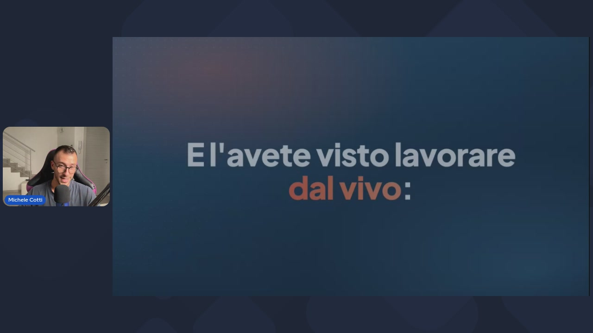
OCR: El'avete visto lavorare dal vivo:
e l'avete visto lavorare dal vivo. Vi ho dato un compito a inizio serata, trovarmi 20 clienti in target, con i messaggi già scritti e a fine serata li aveva portati, ok? Mentre noi parlavamo d'altro. Secondo me, fantastico. Più tutti i casi d'uso concreti, quindi preventivi, email, documenti, i lavori ripetitivi che vi mangiano ore ogni singolo giorno. La terza sera invece vi ho fatto vedere fin dove arriva davvero. Non una risposta a una domanda, ma un pezzo intero di azienda che gira da solo. Dall'inizio alla fine. Avete sentito imprenditori che il cervello ce l'hanno già dentro l'azienda? Raccontarvi con i loro numeri cos'è cambiato da quando l'hanno inserito. Alla fine vi ho presentato il percorso, il Company Brain System. Dove il vostro cervello, non ve lo raccontiamo, lo costruiamo insieme, cucito sulla vostra azienda. E prima di entrare nelle risposte, rimettiamo sul tavolo l'offerta così com'è. 30 Secondi, poi più avanti la riprendiamo con calma, pezzo per pezzo. Il percorso per chi non c'era ieri sera si chiama Company Brain System e sta in piedi su tre pilastri. Il primo, due giornate intere di costruzione dal vivo con me e il mio team in classi piccole.
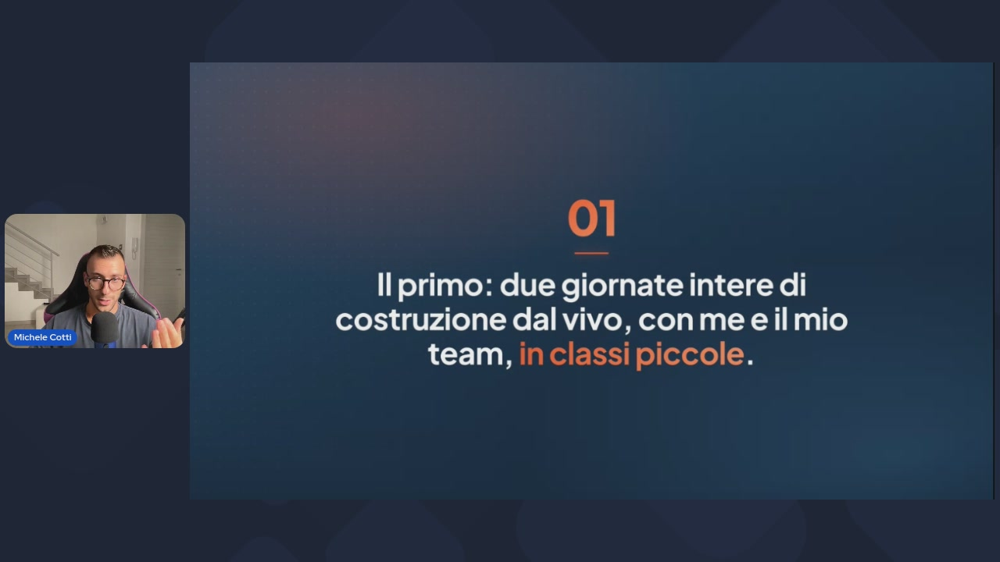
OCR: (0) Il primo: due giornate intere di costruzione dal vivo, con me e il mio team, in classi piccole.
Il vostro cervello lo montate voi, guidati passo passo con i vostri dati dentro. Uscite da lì col cervello acceso e funzionante. Secondo, 60 giorni in cui non siete soli, ok? Call di gruppo ogni settimana, la community di soli imprenditori, due consulents uno a uno e il supporto in chat con il coach che vi segue dall'inizio alla fine. Per il momento delle 11 di sera in cui il pezzo non torna, ok? È sempre lì per voi. Il terzo, gli strumenti che invece restano vostri per sempre. La dashboard del quartiere generale con i vostri dati dentro, il corso completo Cloud Mastery che sono 11 moduli, 15 ore di materiale, qualcosa di davvero pazzesco ragazzi, rimane vostro a vita con tutti gli aggiornamenti che verranno dopo. E in più c'è Ora con le IAI, il vostro assistente 24 ore su 24. Per 60 giorni, gli iscrivete a qualsiasi ora e vi risponde subito sulla vostra situazione. Ok? Il nostro assistente AI, trainato sui nostri contenuti. Quindi, facendo un piccolo recap, abbiamo dato due giornate di costruzione dal vivo insieme a me e al mio team del vostro company Brain, ok?
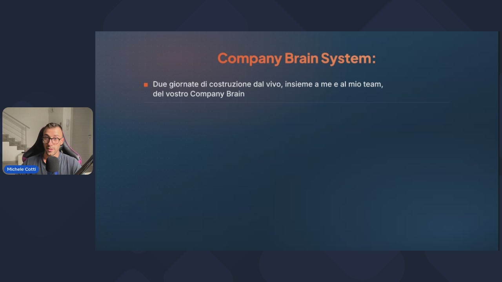
OCR: Company Brain System: ® Due giornate di costruzione dal vivo, insieme a me e al mio team, del vostro Company Brain
Saranno giornate che andranno praticamente dalle 9 di mattina a mezzogiorno e probabilmente dalle 14 fino alle 18-19 di sera, ok? Due giornate intere, valore 5.000 Euro di questa roba. 60 Giorni di affiancamento, quindi call di gruppo ogni settimana, coaching 1 a 1, community e supporto chat, anche qui almeno 4.500 Euro. Dashboard, quartiere generale, personalizzata vita, 2.000 Euro. Corso Cloud Mastery a vita, 2.500 Euro ed è stando veramente molto bassi. Ora con le IAI, il vostro assistente 24-7, ve l'ho detto ieri sera, questo prezzo simbolico non saprei cosa darvi perché non esiste sul mercato, l'abbiamo creato noi. 1.000 Euro, valore complessivo di tutto questo 15.000 Euro, ok? 15.000 Euro. Però ve lo diamo a 4.700 Euro, ok? L'offerta è a soli 4.700 Euro. Il tutto coperto dalla garanzia sul risultato. Se dopo le due giornate e i 60 giorni di affiancamento il vostro cervello non è attivo e funzionante, continuiamo a seguirvi gratis finché non funziona.
OCR: continuiamo a seguirvi gratis, finché non funziona.
Il rischio ce lo prendiamo noi, ok? I posti erano 30 e come vi ho già detto ne restano 13. Questo è il quadro, ok? Recap. Più avanti ci torniamo dentro con calma, ve l'ho promesso, però per ora lo sapete e se volete entrare, lo sapete, potete iscrivere al vostro tutor, ok? Avete il numero di Colò o di Mosè in base a chi è il vostro tutor, iscrivete e potete entrare, vi spiega lui il tutto. Adesso però partiamo dalle domande perché è per quelle che siamo qui stasera e partiamo dalla più grossa di tutte. Michele, tutto bellissimo, tutto fantastico, ma i miei dati dov'è che vanno a finire? Allora, questa è la domanda che ci avete fatto più di tutte, in tutte le salse, ok? C'è l'AI Act, c'è il GDPR, non vorrei mettermi mai nei guai, ok? Perché ci sono tutte queste cose qua. Ed è una domanda giusta, ok? Lo capisco, da imprenditore. Quindi facciamo un patto. Adesso non vi faccio le lezioni di diritto, ok? E soprattutto non vi faccio il giochino di dirvi tranquilli, fidatevi. Vi rispondo con gli articoli di legge citati e anche le fonti ufficiali, ok?
OCR: Che tra l'altro vilasciamo, così le andate a verificare da soli.
Che tra l'altro vi lasciamo così le andate a verificare da sole e sapete che quello che vi dico è la realtà dei fatti. E alla fine di questo pezzo voi saprete esattamente due cose. Cosa vi chiede la legge e cosa dovete fare in azienda per essere a posto, ok? Punto per punto, ragazzi. Quindi vi va bene questa cosa? Apriamo giusto un secondino la chat, dato che tanti di voi chiedevano proprio questo, ok? Chiedete, vi va di sviscerare punto per punto quella roba qua in modo tale che tutto sia chiaro, dato che vedo davvero tanta tanta confusione in giro, ok? Di ciò che c'è, ciò che bisognerà fare, ciò che obblighi, che la gente si sta inventando, ok? Datemi un check e partiamo. Ok, vai. Bene, bene, bene, dai. Partiamo, certo. Ok, ok. Go, go, go. Dai. Ripartiamo. Punto per punto. Partiamo dal capire di cosa stiamo parlando, perché su questi due nomi gira una confusione tremenda. Il JDPR è il Regolamento Europeo sulla protezione dei dati personali.
OCR: IIGDPRè il regolamento europeo sulla protezione dei dati personali.
È del 2016 e si applica dal 2018, ok? Non parla di intelligenza artificiale, parla dei dati delle persone, dei vostri clienti, dei vostri dipendenti. E qui la prima notizia, il JDPR. Voi lo state già rispettando oggi, ok? Quando mandate un email, quando usate il gestionale, quando tenete i dati nei clienti del cloud, ok? Non è una legge nuova che arriva con l'AI. È la legge di sempre, ok? È una legge che c'è da sempre. Le AI Act invece è il regolamento europeo sull'intelligenza artificiale. Regolamento del duemilaventiquattro articolo sediciottantanove, ok? La prima legge al mondo fatta apposta per l'ottobre d'agosto duemilaventiquattro e si applica a tappe. E tra poco vi dico esattamente quali. E poi c'è una terza cosa che quasi nessuno sa. L'Italia ha già la sua legge sull'intelligenza artificiale. La legge centotrentadue del duemilaventicinque in vigore da ottobre scorso. Ci torniamo tra un minuto perché per voi contiene
OCR: Ci torniamo tra un minuto, perché per voi contiene due o tre cose pratiche.
due o tre cose pratiche, ok? Queste sono le regole del gioco. Tutte e tre pubblicate, tutte e tre leggibili. Vi lasceremo come ripeto anche gli articoli. Adesso vediamo cosa dicono a voi. Perché l'AI Act fa una distinzione precisa ed è scritta all'articolo tre. Tra due figure. Da una parte c'è il fornitore, chi costruisce l'intelligenza artificiale e la mette sul mercato. I grandi nomi che avete in mente. Open AI, Antropic, tutti i grandi nomi che già avete in mente, ok? Dall'altra c'è chi la usa nella propria attività e sapete come lo chiama la legge questa persona, quindi voi? Lo chiama deployer, ok? Proprio così anche nella versione italiana ufficiale del regolamento. Voi siete quello, il deployer. E la montagna di obblighi che avete sentito nominare e che la gente mette in giro per fare paura, la documentazione tecnica, le certificazioni, la valutazione di conformità, quella roba lì sta tutta in capo al fornitore. A chi costruisce, ok? Che sia chiaro questa cosa. Non lo dico io,
OCR: Nonlo dico io: è l'impianto del regolamento.
è l'impianto del regolamento. Chi fabbrica risponde del prodotto, ok? Chi lo usa per lavorare sui documenti ha regole molto, molto più leggere. Quindi no, usare l'intelligenza artificiale in azienda non è una zona grigia, ok? È un'attività prevista, regolata e pienamente lecita. Allora la domanda diventa, a voi che siete deployer, ok? Cosa chiede la legge europea? La cosa principale è una ed è scritta nell'articolo 4 dell'AI Act. Ve lo leggo perché merita, ok? Di essere letto. I fornitori e i deployer dei sistemi di AI adottano misure per garantire la misura del possibile un livello sufficiente di alfabetizzazione in materia di AI del loro personale. Nonché di qualsiasi altra persona che si occupa del funzionamento e dell'utilizzo dei sistemi di AI per loro conto. Rileggetela, ok? Se volete rileggerla, rileggetela. Adesso vi spiego in poche parole cosa dice. La legge europea a chi usa l'intelligenza artificiale in azienda chiede questo, che chi la usa sappia quello che sta facendo,
OCR: che chila usa sappia quello che sta facendo.
ok? E questo non è in arrivo, ma in vigore dal 2 febbraio del 2025, da un anno e mezzo. E la commissione europea nelle sue risposte ufficiali su questo articolo dice due cose interessanti. La prima, non servono certificati o corsi bollati, basta poter dimostrare che la formazione c'è stata anche con un registro interno, ok? La seconda cosa e questa ve la sottolineo, affidarsi solo alle istruzioni d'uso degli strumenti dice la commissione, rischia di non bastare. Quindi, avete capito il punto? La prima cosa che la legge dice a un'azienda che usa l'AI non è un divieto, è formarsi, ok? È formarsi. Tenetelo lì, perché a fine ragionamento questo cambia tutto. Poi, per onestà, ci sono dei paletti, ok? Perché due ce ne sono e ve li dico io prima che ve li dica qualcun altro. Primo, ci sono usi vietati per tutto, per tutti, tipo manipolare le persone o fare punteggi, fare social scoring, ok? Fare punteggi sociali. Roba lontana anni luce dall'uso aziendale di cui parliamo, ma esiste
OCR: Robalontana anni luce dall'uso aziendale di cui parliamo, ma esiste, articolo 5.
ed è l'articolo 5, se volete andare a leggervelo. Secondo, e questo è più concreto, se un domani usate l'AI per decidere sulle persone, quindi per selezionare curriculum, per valutare o sorvegliare i dipendenti, lì entrate in una categoria diversa, che la legge chiama ad alto rischio. E lì ci sono regole vere, ok? Regole che l'Europa ha rinviato a fine 2027, quindi c'è tempo, ok? Ma se uno di voi ha in testa un uso del genere, quello è esattamente il tipo di caso da mettere sul tavolo col tutor, ok? Parlatene col tutor, lo vediamo, perché lì non si deve improvvisare. Per tutto il resto, per l'uso di cui abbiamo parlato in queste tre sere, documenti, preventivi, email, procedure, automazioni, la richiesta della legge resta quella dell'articolo 4, personale, formato, ok? E siccome vi ho promesso precisione, vi do anche il calendario, perché su questo si dicono tante imprecisioni, ok? Febbraio 2025, già in vigore l'obbligo di alfabetizzazione e i divieti, ok? Ci siamo dentro? Da un anno e mezzo? Non è una novità
OCR: Ci siamo dentro da un ElalaloX=911(-7 740}
quella roba qua. Invece, il 2 agosto 2026, tra dieci giorni, cos'è che c'è? L'AI Act entra in applicazione generale e diventano pienamente operativi le autorità di vigilanza nazionale, che in Italia sono già state designate, quindi c'è l'Agenzia per la Cyber Sicurezza Nazionale e la GID. Lo dice la legge italiana, ok? Non lo dico io. E qui vi do anche l'ultimissima notizia fresca delle poche settimane, così vedete che non siamo qua a raccontarvi le cose lette sei mesi fa, ok? A giugno l'Europa ha approvato in via definitiva un pacchetto di semplificazione e ha reinviato al 2027-2028 gli obblighi per i sistemi ad alto rischio ed è una cosa recente. Quelli dei costruttori e degli usi delicati di cui vi dicevo. Delicati, ok? Degli usi delicati di cui vi dicevo, quelli ad alto rischio. Tradotto, l'Europa ha alleggerito, rimandato la parte pesante. Ma la struttura parte e la richiesta per chi usa quella dell'articolo 4 è già in vigore da un anno e mezzo, ok? Quindi la fotografia è questa. Nessun motivo di panico, nessuna tagliola, ok?
OCR: Quindi la fotografia è questa: nessun motivo di panico, nessuna tagliola il 2 agosto.
Il 2 agosto. Ma la direzione è segnata nero su bianco. Questa cosa sta diventando il modo normale di lavorare con le sue regole, ok? E chi ci arriva formato è avanti. Chi ci arriva impreparato chiaramente poi deve rincorrere a mettersi a posto. E adesso la parte che vi preme di più, e perché lo so, i dati, ok? Perché la paura vera, ditemi se sbaglio, è praticamente questa. Ma se io metto dentro i miei preventivi, i miei clienti, i miei numeri, questa roba dov'è che finisce? Qualcun altro la può vedere? Diventano le risposte che magari qualcun altro chiede a Claude e lui gli risponde con i miei dati? Allora, statemi un attimo a sentire perché qui c'è la distinzione che dovete portarvi a casa stasera. La differenza non è quale AI usate, è che tipo di account la usate. Se usate un account personale da consumatore, anche a pagamento, i vostri dati possono essere usati dal fornitore, anche per i suoi scopi, compreso l'addestramento dei modelli. Anche qua c'è comunque un flag da mettere, poi se entrate ad esempio nell'app di Claude, c'è un toggle che vi dice
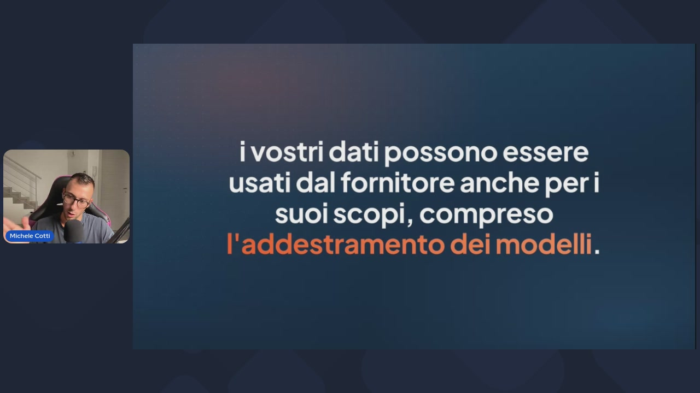
OCR: i vostri dati possono essere usati dal fornitore anche peri suoi scopi, compreso l'addestramento dei modelli.
ok, non voglio che i modelli utilizzino i miei dati, lo disattivi e siamo a posto, ok? Sta nelle condizioni d'uso e non è un segreto, lo scrivono, ok? Ma sugli account di lavoro, la musica cambia completamente e anche qui non vi chiedo di fidarvi. Vi leggo cosa c'è scritto nei termini commerciali di Antropic, l'azienda di Claude, lo strumento su cui lavoriamo. Sezione B, testuale. Antropic non può addestrare i modelli sui contenuti del cliente. Non, non lo fa di solito, ok? Non può per contratto. E lo stesso contratto dice che gli input restano vostri e gli output sono di vostra proprietà. E per il GDPR, questo significa una cosa precisa. Sull'account di lavoro, il fornitore di AI è un responsabile del trattamento, articolo ventotto, regolato da un contratto sulla protezione dei dati. Esattamente come il vostro fornitore di posta elettronica già fa, esattamente come il vostro gestionale in cloud che probabilmente già avete, ok? Stesso schema legale che usate già ad oggi, da anni senza perderci il sonno. Ecco perché vi dico che gli obblighi, il GDPR
OCR: Ecco perché vi dico che il GDPRnonvi porta obblighi nuovi per colpa dell'Al:
non vi porta obblighi nuovi per colpa delle AI, ok? Vi chiede le stesse attenzioni di sempre con un fornitore in più. La differenza tra essere a posto e non esserla sta in due cose. Usare l'ambiente giusto e sapere cosa metterci dentro. Ed entrambi, chiaramente si imparano, ok? E un'ultima cosa sui rischi veri, perché i fatti contano più delle paure. Ad oggi le sanzioni sull'AI in Italia e in Europa hanno colpito chi la costruisce, ok? Il Garanta, ad esempio, è intervenuto su OpenAI, su DeepSeek, su Replica. Tutti fornitori. Un'azienda sanzionata per l'uso che raccontiamo qui, quindi sui documenti, sui preventivi, sull'email, con le giuste attenzioni, ok? Ad oggi non esiste un caso. E allora? Chiudiamo il cerchio. Ve l'ho promesso. Alla fine dovete sapere esattamente cosa fare. Eccolo. Questo è il protocollo e sono cinque cose. La prima, uno, lavorate nell'ambiente giusto. Account di lavoro con il contratto che vieta l'addestramento sui vostri dati. E questo, chiaramente, dipende dal modello che si va a utilizzare.
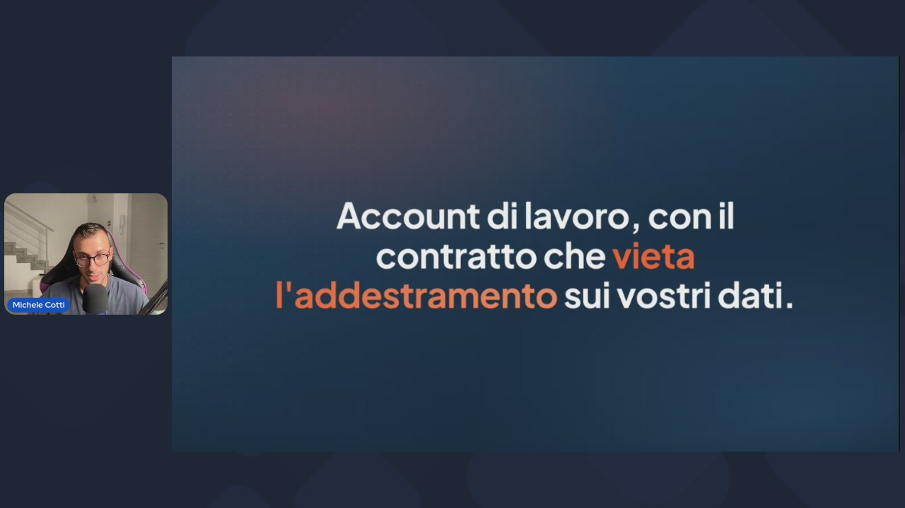
OCR: Account di lavoro, con il contratto che vieta l'addestramento sui vostri dati.
Ad esempio, per Antropic, per quelli di Cloud, c'è l'account team che già questa cosa ce l'ha dentro, o l'account enterprise, ok? Per altri fornitori, chiaramente, bisogna andare a vedere l'ambiente che si utilizza. Secondo, la regola d'oro. Decidete cosa entra e cosa no. Quindi il GDPR la chiama minimizzazione, articolo 5. Nei prompt ci mettete i dati che servono al lavoro, non di più. Nomi quando servono, dati sensibili solo se necessari. E per certe analisi, nemmeno serve il nome vero del cliente, ok? Questa regola ve la insegniamo e diventa un automatismo. Tre, account aziendali e una policy interna. Chi in azienda usa l'AI? Con quale account? Per cosa? Una pagina, ok? Non serve un libro intero. Una pagina. Così nessun collaboratore incolla dati dei clienti nell'account personale di turno, ok? E la cosa che il 90% dell'azienda non fa è che vi mette davanti a tutti. E poi c'è la quarta, formazione documentata. L'articolo 4 che vi ho letto prima, personale con un livello sufficiente di alfabetizzazione.
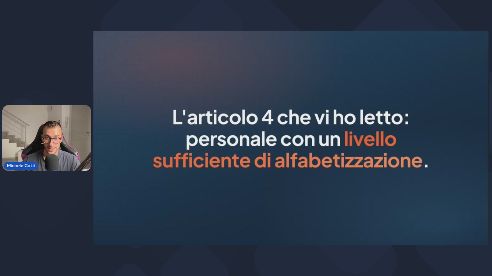
OCR: L'articolo 4 che vi ho letto: personale conunlivello sufficiente di alfabetizzazione.
La commissione dice, tenete traccia della formazione fatta, basta un registro interno. Un percorso strutturato con date, contenuti, attestazioni di partecipazione, è esattamente il tipo di misura che dimostra che avete adempiuto a questa cosa. Ok? E poi c'è 5. I casi speciali, li trattate da casi speciali. Ok? Dati dei dipendenti, uso dell'AI che tocca al loro lavoro. La legge italiana, articolo 11, chiede di informarli. E sul monitoraggio c'è lo statuto dei lavoratori, quindi lì si va chiaramente coi piedi di piombo. Chi è un professionista, avvocato, commercialista e consulente, la 132 chiede di comunicare al cliente l'uso dell'AI con linguaggio chiaro, ed è un articolo, articolo 13. Chi tratta dati sanitari, ok, c'è un'attenzione in più, ovviamente, e il paziente va informato, anche qua ve lo dice l'articolo 7. Sono situazioni che si impostano bene una volta e poi girano. E sono esattamente il genere di cose che guardate col vostro tutor sul vostro caso specifico, ok? Perché una risposta qui, uguale per tutti, sarebbe una risposta sbagliata, perché ognuno ha un'altra casistica se si è in quei casi.
OCR: perché una risposta uguale per tutti qui sarebbe una risposta sbagliata.
Fine del protocollo, ok? Sono cinque cose, niente di più, ok? Nessuna delle cinque è un muro, sono abitudini di lavoro. E lo so che qualcuno si sta già chiedendo, mi chiede, ma non c'è un documento da fare, ok? Un posto dove devo scrivere, dove uso l'AI e come, dato che ne stiamo vedendo parlare ovunque di quella roba qui, ve lo dico com'è e vi dico esattamente cos'è obbligatorio e cosa no. Perché su questo in giro si vende tanta paura, ok? Tanti ci stanno marciando sopra questa cosa. La parte obbligatoria, già oggi, è una. Quando l'AI lavora sui dati personali, va aggiunta una riga a registro dei trattamenti. Il documento che il GDPR vi chiede da sette anni, ok? Se non ce l'avete, il problema non è l'AI e che vi manca da prima, ok? Ed è un problema già da prima, non da quando c'è l'AI. Stessa logica per l'informativa privacy. Non un documento nuovo, una riga aggiornata a quello che già avete. Poi c'è la mappatura completa. Un foglio dove scrivete quali AI usate, per cosa, con che account. Quella oggi, la legge, non
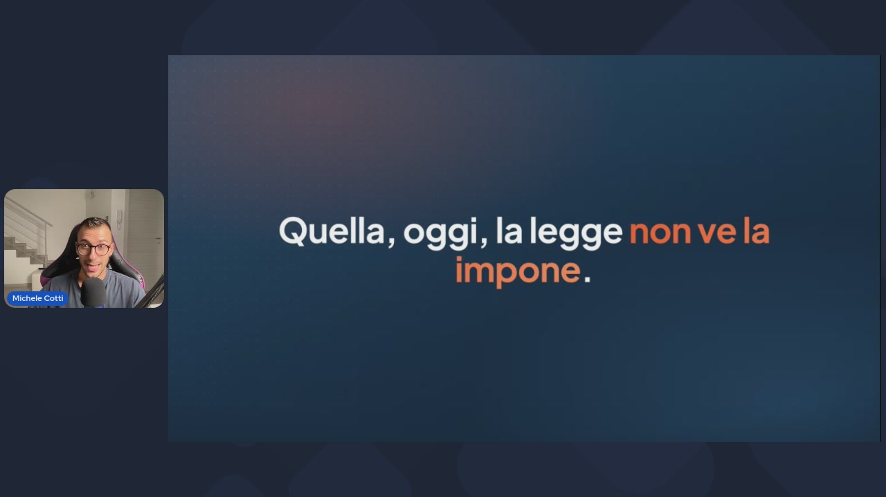
OCR: Quella, oggi, la legge non ve la impone.
ve la impone, ok? E chi vi dice il contrario, vi sta vendendo la paura. Ma, chiaramente, è la prima cosa che qualunque consulente servi farà fare. E anch'io ve la consiglio di fare, ok? La mappatura fatela, perché probabilmente l'anno prossimo servirà. Ma non c'è una legge che dice dal 2 agosto la mappatura è obbligatoria. Andate a leggervi i documenti e gli articoli e vedrete che non è così. Perché ormai, io vedo in giro su internet tutti che dicono, no, dal 2 tu devi avere sta roba, altrimenti sei in multa. Non è vero. Andate a leggervi gli articoli e vedete che quella roba qua non esiste, ok? Perché il documento da cui si capisce cosa vi applica è questa, ok? Quindi se voi chiaramente lo fate fare a un consulente serio, chiaramente vi fa questa mappatura perché chiaramente vi dice, da questo documento capisce cosa si applica alla vostra casistica. E vi prepara a tutto quello che arriva nel 2027, ok? E vi prepara a tutto quello che arriverà nel 2027 forse è perché non è neancora certa come cosa, ok? E adesso fatemi chiudere questo pezzo col pensiero che per me conta più di tutti. Voi siete arrivati stasera con la domanda
OCR: “posso usare l'Al senza mettermi nei guai ?”.
posso usare le IAI senza mettermi nei guai? Ma avete visto cosa dice davvero la legge? La legge non vi vieta le IAI. La legge vi chiede di usarla sapendo quello che state facendo, ok? L'unica vera richiesta, quella in vigore da un anno e mezzo è l'alfabetizzazione, ok? La formazione, sapere cosa si sta facendo. Quindi la domanda giusta non è rischio qualcosa se la uso? La domanda giusta è sono a posto se la uso senza sapere come funziona? E la risposta quella scritta negli articoli che vi ho citato è no, ok? Il rischio non è le IAI, il rischio è usarla alla cieca. Ed è esattamente il rischio che dopo un percorso fatto bene voi chiaramente non correte più perché siete formati su questo. Quindi adesso che il tema legale l'abbiamo messo a posto con gli articoli e le fonti e spero di essere stato chiaro, ok? La domanda cambia. Non più posso usarlo senza problemi? Quella risposta ormai ce l'avete. La domanda adesso è ok Michele, ma nella mia azienda questo cervello cosa farebbe tutto il giorno?
OCR: “ok Michele, ma nella MIA l azienda, questo cervello, cosa Me; 4 farebbe tutto il giorno ?”
Ed è la domanda giusta perché è quella che ci avete fatto in tanti col tutor, ok? Va bene i casi che ci hai mostrato, ma il mio caso specifico come si adatta? Quindi adesso ci sto su come si deve. Prima vi faccio vedere le quattro aree dove il cervello lavora in qualunque azienda. Poi scendiamo nei settori e tra poco quando apriamo la chat scendiamo proprio nelle vostre aziende ok? Una per una. Anzi facciamo una cosa. Mentre parlo scrivete in chat già il vostro settore, ok? Solo il settore quindi edilizia, studio, commercio, servizi quello che è, ok? Ci servirà tra poco e a voi conviene più più so chi c'è più gli esempi li faccio su di voi, ok? Quindi datemi un check ok siamo qui anche per questo, ottimo ottimo vi è chiaro lato privacy in questo momento? Edilizia, automotiva, agricoltura commercio, servizi, finance ok, ok ottimo
OCR: Ciservirà tra poco, e a voi conviene: più so chi c'è, più gli esempi li faccio su di voi.
se volete aggiungermi anche un qualcosina in più di cosa fate nello specifico mi occupo di consulenza privacy, complimenti per come hai affrontato l'argomento grazie Salvatore, mi fa piacere spero di essere stato chiaro e dato che tu sei consulenza privacy Dimmi se quello che ho detto dàci un concetto inciutt se quello che dico è realtà, perché davvero ormai sui social c'è tutta gente che vi dice eh no, tutte le persone che vendono cose di questo tipo dicono eh no, però dal 2 agosto cambia tutto, devi metterti in regola, guarda, fatti fare la consulenza da me che ti metto tutto a posto. No, ok, ogni consulente serio vi farà la mappatura perché ci sta, vi capisce cosa dovete fare e cosa no, ma non è una roba che è una regola che dovete per forza di avere, ok? Avvocato, grande Alessandra, anche te sicuramente su questo ne sai, ok? Preciso ed esaustivo, lascia stare i terroristi, grazie, ok, ottimo, ottimo, ottimo, ottimo.
OCR: Ciservirà tra poco, e a voi conviene: più so chi c'è, più gli esempi li faccio su di voi.
Ottimo, ottimo, ma dipende cosa dici lato dipendenti, Lorenzo, ok? Poi apriamo comunque la parte di domande, però dipende cosa dici lato dipendenti, perché quello basta che metti l'informativa, i dipendenti lo sanno, quelli che si tratta d'alto rischio e se tu le candidature delle nuove persone che fai in azienda passano per una scrematura lato AI, perché? Perché ci sono state casistiche di persone che sono candidate ad azienda e sono state tutte rifiutate direttamente dall'AI, non c'era niente dietro, quella è una cosa d'alto rischio, ok? Ottimo, siete davvero in tanti settori, ok? Ok, ottimo, ottimo, magari mettetevi anche un attimo più di preciso cosa fate, così poi andiamo un attimo a sviscerare, ora torniamo un attimo a noi. Quindi le quattro aree e ascoltatele pensando la vostra settimana non alla tecnologia, ok? La prima è la carta, l'amministrazione, i preventivi che si preparano da soli sulla vostra logica e con i vostri prezzi, avete visto anche da me ieri sera,
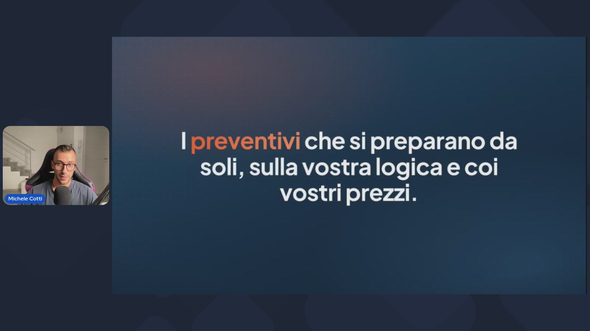
OCR: I preventivi che si preparano da soli, sulla vostra logica e coi vostri prezzi.
le fatture, i documenti che smettete di rincorrere, le mail che al mattino è già scritta da rivedere e mandare, non da comporre da zero, l'avete visto sempre da me ieri sera, il documento che invece di cercarlo 20 minuti nelle cartelle lo chiedete e ve lo porta, è l'area più semplice ed è quella che nei questionari ci avete indicato quasi tutti, ok? La burocrazia che vi mangia i pomeriggi. E poi passiamo alla seconda, che sono i clienti. Quante informazioni sui vostri clienti vivono solo nella vostra testa? Cosa ha comprato? Cosa gli avevate promesso? Come era rimasto l'ultimo discorso? Il cervello vi dà il quadro completo di ogni cliente in dieci secondi, ok? Storico, accordi, cose in sospeso. Le risposte che date sempre uguali, cento volte all'anno. Le date una volta sola e poi escono da sola, col vostro tono, ok? Perché l'abbiamo fatto per quello. E il follow up, quello che salta sempre perché poi lo richiamo, quello partirà da solo. Ve lo ricordate? L'avete visto dal vivo la seconda sera, ok?
OCR: Ve lo ricordate: l'avete visto dal vivo la seconda sera.
Poi c'è la terza, che sono i numeri. Il controllo. Oggi, per sapere come sta andando il mese, quante telefonate dovete fare? Quanti aspetta che chiedo? Col cervello avete il quartier generale. Ordini, incassi, scadenza, cantieri, commesse. Quello che conta per voi in una schermata. Non a fine mese. Adesso, ok? Sempre accessibile. Comandare con i numeri sott'occhio, invece, che ha sensazione. Per chi vuole crescere, questa credo che sia l'area che vale di più in assoluto. E poi abbiamo la quarta, che è quella che nessuno mette in conto. La delega. Il come si fa delle cose, oggi, dov'è che sta? Nella vostra testa, probabilmente. E ogni volta che entra una persona nuova o che qualcuno sbaglia, tocca a voi rispiegare, ok? Quando le procedure vivono nel cervello e sono scritte, l'azienda impara a fare le cose senza passare ogni volta da voi. Il nuovo arrivato chiede al cervello, non a voi. Chi ha un dubbio chiede al cervello, non a voi. Chi ha usato il primo ingranaggio, il regalo della terza sera, ok? Il primo pezzo di questa cosa ce l'ha già in mano.
OCR: il primo pezzo di questa cosa ce l'ha già inmano.
Queste quattro aree valgono praticamente per tutti, ok? Ma so che ognuno di voi sta pensando, sì, ma nel mio settore com'è che può funzionare, ok? Allora facciamo qualche esempio concreto sui settori che so che stasera sono in sala. Chi sta in edilizia o nell'impiantistica, dato che ho visto già anche un po' di persone prima in chat. Il preventivo di cantiere che magari oggi vi prende una serata. Il cervello conosce i vostri listini, i vostri fornitori, i vostri margini e ve lo prepara da rivedere. Gli stati di avanzamento, le richieste ai fornitori, i documenti di commessa, roba che entra ed esce da sola. E voi sapete, cantiere per cantiere, dove siete, senza chiamare nessuno. Chi invece ha uno studio o magari fa consulenza, commercialisti, consulenti, professionisti, la raccolta documenti dai clienti, che è la tortura di ogni scadenza, lo fa il cervello, sollecito compreso. Le richieste repetitive dei clienti, quelle cento email uguali, escono da solo con la vostra firma.
OCR: Le richieste ripetitive dei clienti, quelle cento email uguali, escono da sole con la vostra firma.
E il quadro di ogni cliente, pratica aperte e scadenze, ce l'avete in un colpo d'occhio, ok? Chi vende, che sia commercio, distribuzione o servizi, l'ordine che arriva, la conferma che parte, il magazzino che si aggiorna, ok? Il cliente che viene ricontattato al momento giusto, l'avete visto con l'azienda vinicola, magazzino e import gestiti dal cervello. E l'avete visto la terza sera col flusso intero, entra la richiesta, esce l'offerta, parte il follow up, fa il preventivo, genera il contratto, ok? Chi lavora con le polizze magari, con i contratti, con i rinnovi, assicurazioni, noleggi, servizi ricorrenti, le scadenze che il cervello tiene d'occhio per voi. Il rinnovo che parte da solo trenta giorni prima, il cliente seguito senza che nessuno se lo debba ricordare. E guardate che il punto non è l'elenco, è che ogni azienda lo usa a modo suo. Smeraldo ad esempio lo usa per preparare le diligence per gli investitori, ok? L'azienda vinicola per il magazzino, adesso stiamo integrando anche altre cose.
OCR: L'azienda vinicola per il magazzino.
Vole userete per la cosa che vi mangia più tempo, qualunque essa sia, ognuno ha il proprio caso specifico, ok? Perché il cervello non è un programma con le funzioni, è un socio che impara la vostra azienda. E qui torno al conto della terza sera. Non ve lo rifaccio tutto, ve lo ricordate. Le vostre ore di lavoro ripetitivo per le settimane di un anno per il valore della vostra ora, ok? Nell'esempio con dieci ore a settimana faceva 24.000 Euro l'anno, ok? 24.000 Euro l'anno. Fatto per difetto, con i vostri numeri ognuno ha il suo, e chi era qui l'ha scritto sul foglio della diagnosi. Adesso però guardatelo con gli occhi di stasera dopo le quattro aree. Quel numero era solo il tempo, ok? Non conta il preventivo mandato tardi che è diventato un lavoro perso. Non conta le decisioni prese a sensazione perché i numeri non c'erano magari. Non conta il cliente che si è raffreddato perché il follow up è saltato. Il conto vero è più grande di quello sul foglio, ok? E lo state già pagando, solo che non arriva una fattura, quindi non si vede quella cosa.
OCR: Elo state già pagando: solo che non arriva una fattura, quindi non si vede.
E chiudo questo pezzo con l'immagine che per me conta più di tutte. Ve l'ho detta la terza sera e stasera lo capite fino in fondo. Questo non è comprare un altro strumento, ok? Gli strumenti li avete già, infatti il tempo non è tornato. Questo è cambiare posto dentro la vostra azienda, salire di un gradino, ok? Salire di un gradino. Smettere di essere quelli da cui deve passare ogni preventivo, ogni risposta, ogni come si fa, ok? E diventare quelli che controllano un sistema che gira. Oggi la vostra azienda funziona se ci siete voi. Tra sei mesi può funzionare perché l'avete costruita così, ok? Tra sei mesi può funzionare perché l'avete costruita così. E questo lo spostamento. È questo che vi fa spostare, vi fa salire di un gradino. E adesso che avete visto il cosa, rimettiamo sul tavolo il come ve lo portate a casa. Riprendiamo il percorso pezzo per pezzo. Partiamo dalla domanda più gettonata. Sì, ma le due giornate com'è che funzionano? Cosa facciamo in pratica?
OCR: Cosa facciamo, in pratica? E dopo ?”
E poi dopo cosa succede? Ce l'avete chiesto in tanti. È giusto chiederlo, ovviamente. E stasera ci rispondiamo per bene. Prima però una cosa, così togliamo subito il dubbio più grosso. I posti sono contati apposta. Il cuore di tutto sono due giornate in cui il cervello lo costruiamo dal vivo, insieme, ok? E più di 15 persone per classe. Non le seguo davvero, ok? Allora, le due giornate. Ve le racconto come se ci foste già dentro. Prima ancora di cominciare, voi non arrivate a mani vuote. Chi ha seguito le serate ha già in mano tre pezzi, ok? La diagnosi della prima sera, quindi sapete già dove vi serve il cervello, insomma. L'impronta, quindi l'AI sa già anche chi siete. E la mappa del tesoro, quindi avete già la lista di cose che può girare da solo, che possono girare da sole. E prima delle giornate vi diciamo noi, con una checklist precisa, cosa tenere pronto. Quindi quali file, quali accessi, cosa serve. Nessuno arriva impreparato, perché prepararvi è compito nostro, ok? Non vostro. Dovrete compilare un bel questionario, ok?
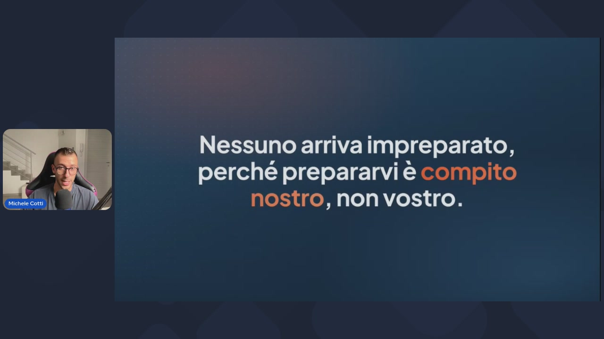
OCR: Nessuno arriva impreparato, perché prepararvi è compito nostro, non vostro.
E poi chiaramente si entra, vi spiegherò tutto, ok? La prima giornata sono le fondamenta. Si parte dall'ambiente, quindi l'account giusto, impostazioni giuste. Poi si costruisce la struttura, le cartelle, la memoria, l'organizzazione dove tutto si appoggia, ok? Dove tutto entra. Ed è qui che dentro il cervello ci finisce la vostra azienda. I vostri documenti, i vostri listini, il vostro modo di lavorare. Ognuno sui propri file, guidato passo passo con me e il mio team e giriamo tra di voi. A fine prima giornata il cervello vi conosce, ok? Gli fate una domanda sulla vostra azienda e risponde con le vostre cose. Non è ancora un socio operativo, ma la memoria ce l'ha, ok? Ed è la parte che da soli non fareste mai, ok? E questa è tutta la prima parte. E chiaramente da qui poi continuerà a migliorare, perché metterete roba nuova. Inizierà ad ingrandirsi, capirà, imparerà e migliorerà sempre di più. Perché dal momento in cui lo si crea, più si va avanti, cresce e migliora sempre di più. Un cervello appena creato non sarà mai come un cervello che gira da mesi, ok?
OCR: edèla parte che da solinon fareste mai.
Poi c'è la seconda giornata che si accende, ok? Si prende la vostra mappa del tesoro, si scelgono le attività che vi mangiano più tempo e si costruiscono le prime automazioni. Sul vostro caso, non su un esempio mio, ok? Il preventivo se fate preventivi, la raccolta documenti se avete uno studio. Gli ordini se vendete. E poi si monta il quartiere generale, la dashboard che avete visto girare con i vostri numeri dentro. E ve lo ridico perché me l'avete chiesto. È costruita col company brain stesso, ok? Non c'è nessun strumento esterno da comprare per la dashboard, nessun altro abbonamento che spunta dopo, ok? Alla fine delle due giornate uscite col cervello acceso e funzionante, ok? Non con una cartella di appunti da guardare sul quando avrò tempo, ok? Con un pezzo di azienda che gira. E chiaramente da lì poi si va avanti, ok? Si va avanti. Avete anche tutto il corso che vi insegna a creare automazioni, che vi insegna a creare agenti. E poi il vostro cervello dall'aumento che l'avete creato, sapete come integrarci le cose, come metterle.
OCR: con un pezzo di azienda che già gira.
Starà a voi attaccarci tutte le cose di conseguenza che vi serviranno, ma saprete come farlo, l'avete già fatto, ok? E ci avete già tutto pronto. E poi si va avanti quei 60 giorni per portarlo tutto dentro, tutto il resto, come vi ho appena detto. E una cosa sul metodo, perché è quello che fa la differenza. Non ve lo costruisco io per consegnarvelo chiave in mano, ok? Che sia chiara questa cosa. Lo costruite voi, con le vostre mani, guidati, ok? Perché se il mese dopo cambia qualcosa nella vostra azienda, voi dovete saper mettere le mani sul vostro cervello, ok? Quello che vi portate a casa non è solo il sistema pronto, è la capacità di governarlo, di migliorarlo, di aggiungere cose. Come vi dicevo, avete anche tutto il Cloud Mastery, che vi insegna a creare cose nuove e ad attaccare al brain. E poi ci sono i 60 giorni dopo, ve li avevo raccontati bene la volta scorsa, quindi stasera ve li rimetto in fila veloce. Le call di gruppo, ogni settimana, si lavora su cose specifiche, si sciolgono i dubbi. Ogni settimana abbiamo una call e ci mettiamo lì.
OCR: Le call di gruppo, ogni settimana: si lavora su cose specifiche e si sciolgono i dubbi.
La community privata, solo imprenditori, tutti nella stessa costruzione, nello stesso momento. Costruite un qualcosa di carino che può essere utile anche ad altri, lo si condivide, ci si dà spunti. Siamo imprenditori, è bello di crescere insieme e di aiutarci a vicenda. Ora con le IAI, il vostro assistente 24 ore su 24, che è la prima linea, ok? Quello qui scrivete il sabato sera o tra una call e l'altra e vi risponde subito. Le due consulenze uno a uno, solo voi e un coach esperto a porte chiuse sulla vostra azienda e i vostri numeri, ok? Sul vostro caso specifico. E il supporto in chat con il coach. Anche qui potete chiedere qualsiasi cosa. Abbiamo creato il cervello, vi ho iniziato ad inserire le prime cose. Bene, vi serve qualcosa? Chiedete in supporto. Avete le coaching one to one, non siete mai lasciati da soli, ok? Quello delle undici di sera, quando il pezzo non torna, ok? Dall'altra parte trovate una persona che c'è già passata ed è la cosa che fa la differenza tra chi arriva in fondo e chi invece no. Poi ci sono le cose che restano vostre a prescindere per sempre.
OCR: Poicisonole cose che restano vostre a prescindere, per sempre.
La dashboard, il quartiere generale, installata sulla vostra azienda, nessuno ve la stacca. Il corso completo di Cloud Mastery che vi ho già ripetuto più volte, undici moduli, quindici ore di lezioni pratiche, è vostro a vita, ok? Vi porta dalla mappa e dal setup del giorno 1 fino a costruire da soli, automatizza automazioni e strumenti, ok? È il manuale del vostro cervello per sempre. Con gli aggiornamenti, chiaramente, quando tra sei mesi esce una novità, voi sarete aggiornati, ok? Quindi facciamo un recap perché davvero è tanta tanta roba. Due giornate di costruzione dal vivo, insieme a me e al mio team, del vostro company brain, diviso nelle due giornate che avete visto e che vi ho appena spiegato. Valore di 5.000 Euro, 60 giorni di affiancamento con call di gruppo, coaching 1 a 1, community, supporto chat, ok? Non siete mai lasciati da soli. 4.500 Euro di valore reale a mercato. Dashboard o quartiere generale personalizzata a vita, 2.000 Euro. Corso Cloud Mastery a vita, 2.500 Euro minimo e questo qua davvero ci tengo, ok?
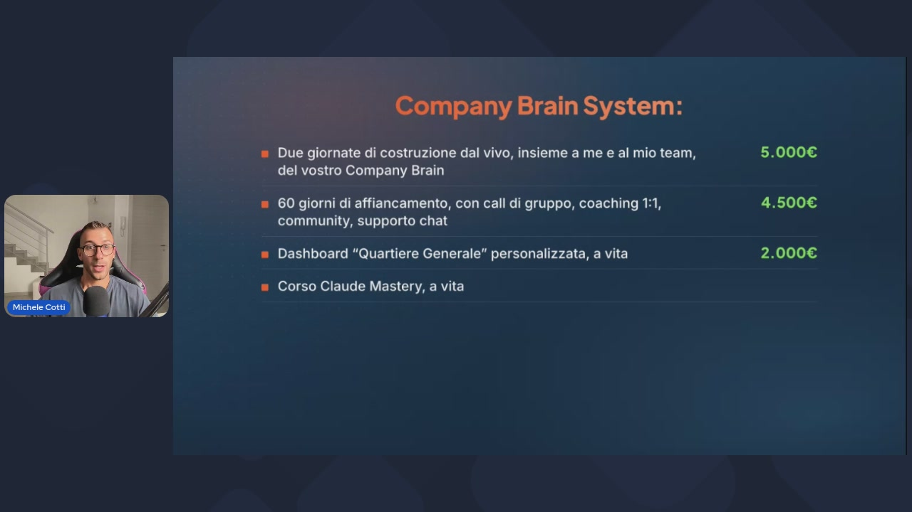
OCR: Company Brain System: »® Due giornate di costruzione dal vivo, insieme a me e al mio team, del vostro Company Brain ® 60 giorni di affiancamento, con call di gruppo, coaching 1:1, ‘community, supporto chat = Dashboard “Quartiere Generale" personalizzata, a vita = Corso Claude Mastery, a vita 5.000€ 4.500€ 2.000€
Varrebbe molto molto di più perché Cloud Mastery vi dà tutto. All'interno di Cloud Mastery vado a costruire anche un'applicazione, un tool interno live con login multiutente. Cose che una volta che imparate a fare potete costruire tool interni per la vostra azienda, bracci del brain che poi vi automatizzano altre cose. Davvero saprete fare un sacco, un sacco di roba. Sono gasatissimo per quel corso, ok? Ora con le IAI, il vostro assistente 24 7, anche quello valore simbolico di 1.000 Euro, valore complessivo 15.000 Euro, ok? E come vi ho detto la scorsa volta, a 15.000 Euro ve lo potrei vendere e sarebbe onesta come cifra, ok? È quello che vale sul mercato, un programma del genere. Ma per chi entra in questa prima edizione, l'investimento è di soli 4.700 Euro, ok? Una volta sola. Ve lo lascio qui, ok? 4.700 Euro con tutta sta roba. Lasciatemi bere.
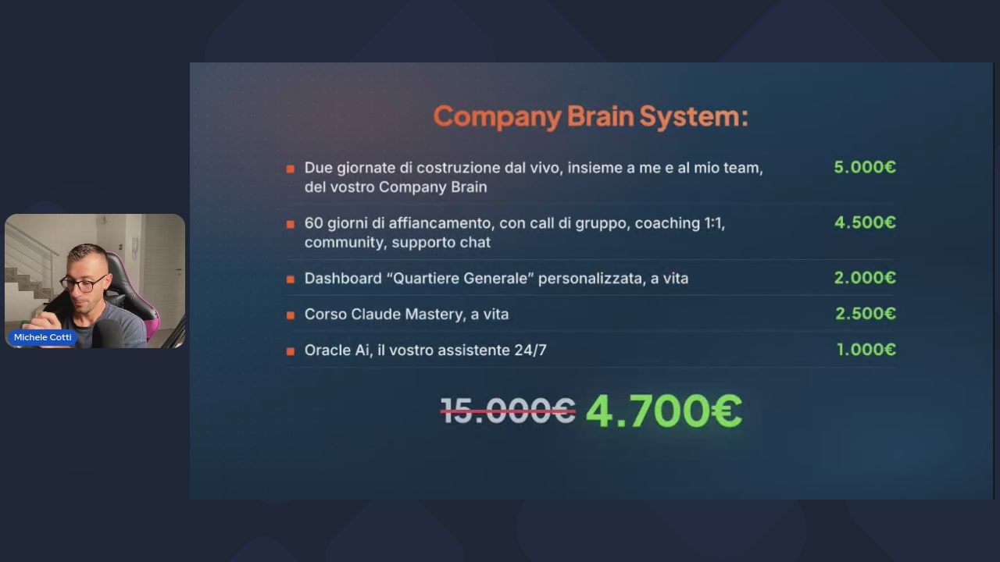
OCR: Company Brain System: Due giornate di costruzione dal vivo, insieme a me e al mio team, del vostro Company Brain 60 giorni di affiancamento, con call di gruppo, coaching 1:1, ‘community, supporto chat Dashboard "Quartiere Generale” personalizzata, a vita Corso Claude Mastery, a vita Oracle Ai, il vostro assistente 24/7 15.000€ 4.700€ 5.000€ 4.500€ 2.000€ 2.500€ 1.000€
Il perché lo sapete già, ok? Perché abbiamo fatto questo presto lo sapete già. In questa fase per me è. Il vostro risultato dal margine, sono sincero, perché è la vostra riuscita che mi costruisce la reputazione su questo mercato, ok? E poi c'è la garanzia sul risultato. Se dopo le due giornate dal vivo, tutto il materiale, i 60 giorni di affiancamento con il coach, il vostro company brain non è attivo e funzionante, noi non vi molliamo lì, ok? Continuiamo a seguirvi gratis, ok? Gratis, finché quella roba qua non funziona. Vuol dire che il rischio ce lo prendiamo noi, non voi. Perché io so che funziona, l'ho fatto sulle mie aziende, l'ho fatto fare a gente come Cristian o come Smeraldo, che avete sentito nelle scorse serate, ok? E sono così sicuro, è giusto che il rischio stia dalla mia parte, non dalla vostra. E voglio che sia chiara una cosa, perché in tanti avete chiesto, ma in 15 il mio caso lo seguite davvero come quello di Cristian e di Smeraldo?
OCR: “ma in 15, ilmio caso lo seguite davvero come quello di Cristian e di Smeraldo ?”
Sì, assolutamente sì. Perché il company brain non è un modello standard uguale per tutti. Parte dalla vostra azienda, dai vostri file, dal vostro modo di lavorare, ok? Le due classi servono esattamente a questo. Ognuna, ognuno se lo costruisce su misura, in modo guidato, ok? Non è un prodotto di scatola, è il vostro, ok? E allora chiudiamo il cerchio, perché a questo punto avete davvero tutto. Avete visto cosa fa il cervello, quanto vale, quanto è l'investimento e stasera avete avuto anche le risposte. Resta solo l'ultimo passo, ok? I post rimasti sono 13. Sincero, in realtà adesso non lo so, perché è passato ormai quasi un'ora da quando abbiamo iniziato, potrebbero essere anche meno. E ve l'ho detto all'inizio, queste prime edizioni le vogliamo seguire davvero una per una, ok? Quindi non ci serve riempire i posti, ci serve riempirli con le persone giuste, ok? Per questo l'ultimo passo non è un pulsante compra, è una chiaccherata. Vi candidate scrivendo al vostro tutor e vi dico esattamente cosa succede quando gli scrivete, così nessuno ha paura della telefonata di vendita, ok?
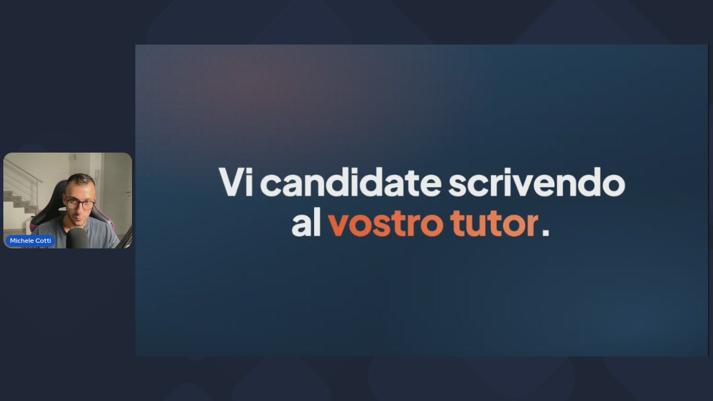
OCR: Vicandidate scrivendo al vostro tutor.
Vi fa qualche domanda sulla vostra azienda, capite insieme se il company brain ha senso nel vostro caso e se ha senso vi spiega tutto il resto. Come si parte? Le date del vostro gruppo, i pagamenti, ogni dettaglio cucito sulla vostra situazione, ok? E anche le date del vostro gruppo verranno prese chiaramente dopo aver fatto entrare tutti, aver fatto un bel questionario completo e quant'altro. Non è che le buttiamo noi a caso, ci basiamo sulle vostre disponibilità. E se dalla chiaccherata esce che non è il vostro momento, ve lo dice, ok? Senza impegno da parte vostra e senza giochini da parte nostra, ok? Se non siete quelli giusti per questa edizione, ve lo diciamo noi, ok? E da adesso in avanti il canale è quello. Non ce n'è un'altra diretta, non c'è un altro annuncio, ok? Non ci sarà un altro live, non ci sarà un altro annuncio. Qualsiasi cosa vi serva, dai dubbi tecnici ai pagamenti, passate dal vostro tutor sulla vostra situazione, perché è lui a cui dovete riferire, ok? E una cosa in più, per chi in questo momento sta pensando, sì Michele, ma la mia è una situazione strana, forse il company brain non fa per me. Scrivete lo stesso al tutor, ok? E' appunto per quello che devi scrivere al tutor.
OCR: E una cosa in più, per chi in questo momento sta pensando
Se siete arrivati fino alla quarta sera, qualcosa che riguarda l'intelligenza artificiale nella vostra azienda probabilmente vi interessa, altrimenti non sareste qua, ok? Scrivetegli e troverete la soluzione migliore per voi, ok? Qui vi lascio il QR code per il tutor Mosè o il tutor Nicolò, ok? Potete tranquillamente, se avete il vostro tutor è Mosè, inquadrate il QR di Mosè, se il vostro tutor è Nicolò, inquadrate il QR di Nicolò. Se invece avete già il numero, direttamente gli scrivete. Se ancora non avete un tutor, ok, semplicemente sceglietene uno tra i due, ok? Se ancora non ce l'avete, poi vi sapranno loro indirizzare se è Mosè il vostro tutor o è Nicolò, ok? Questa è l'unica strada per entrare, ok? Questa è l'unica strada per entrare. Vedrete che Gaia vi sta lasciando anche il link per scrivere direttamente a Mosè e Nicolò, ok?
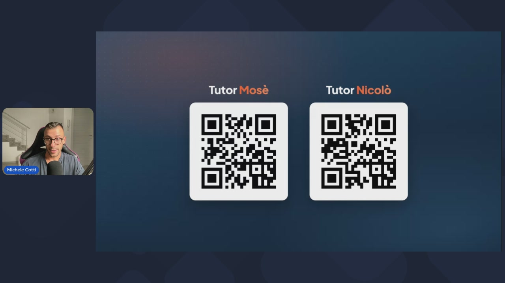
OCR: Tutor Mosè Tutor Nicolò
Se siete da telefono, così che non riuscite ad inquadrare, ok, avete il link direttamente in chat. Se avete Nicolò scrivete Nicolò, se avete Mosè scrivete Mosè, ok? Questo è tutto ragazzi, ok? Questo è tutto. E come vi dicevo, nel senso, le classi sono queste. E poi chiudiamo. E chiudiamo davvero, anche se non dovessimo arrivare a 30, chiudiamo, ok? E saranno classi più piccole e andrà benissimo comunque, ma le classi devono partire, ok? Abbiamo fatto questa offerta e chiuderà, ok? Abbiamo dato anche una tempistica, finito quello, chiudiamo. Arriviamo ai 30 posti o chiudiamo prima? Non c'è problema, non siamo qua per riempire, ok? Mancano pochi posti, avete visto, ne rimangono 13, ne sono volati 17 e probabilmente adesso potrebbero averlo già preso anche altri, in realtà, mentre eravamo in chiamata, ok? Ma il nostro obiettivo non è riempire tutto. Noi sappiamo che 15 persone alla volta le possiamo seguire. Dovesse finire che arriviamo a 20, va benissimo comunque, ci saranno due classi da 10, sarà fantastico perché saremo anche in meno, ok?
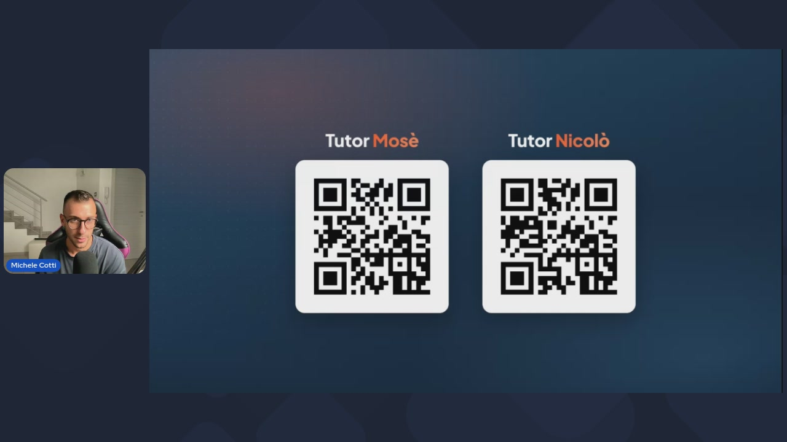
OCR: Tutor Mosè Tutor Nicolò
Ma chiaramente dobbiamo partire, perché le classi devono essere decise e chiaramente poi metteremo le date e si partirà, ok? E sarà un lavoro fantastico, non vedo l'ora di iniziare, perché davvero andremo a creare un qualcosa di davvero molto molto molto bello, ok? Quindi io il più grande consiglio che vi do davvero è scrivete al tutor, ok? Se avete domande, se qualcosa vi interessa, scrivete al tutor, è lì apposta per voi, ok? È lì apposta per voi e il tutor vi sarà, vi saprà indirizzare meglio se questa cosa fa per voi o se non fa per voi, ok? Come ripeto, non siamo qua a dire tutti entrano, no, perché poi siamo in live, ok? E le cose le facciamo insieme. Io non voglio gente che non va bene per questa cosa. Quindi, chiaramente, si passa dal tutor, si parla col tutor, se siete in linea, si entra, ok?
OCR: Tutor Mosè Tutor Nicolò
E poi c'è una marea di roba, ragazzi, perché nelle due live noi andiamo a costruire, ok? Nella prima costruiamo tutto il cervello e poi avrete tempo un attimo per provare, vedere come vi risponde, migliorarlo e quant'altro. Poi dopo andremo a creare il pezzo dopo, lo connetteremo ai vostri strumenti, creeremo l'automazione, ok? E da lì poi avete capito, avete il vostro brain, avete collegato le prime cose, funziona. Di conseguenza sapete come fare tutto il resto e in più avete anche, chiaramente, tutto il corso di Cloud Mastery che vi insegna un sacco di cose in modo pratico. Non serve essere dei programmatori, non serve scrivere una riga di codice, la scrive l'AI per voi, ok? E di conseguenza da lì si inizia a metterci mano e costruire cose. Imparerete a costruire tool interni per la vostra azienda, imparerete a creare automazioni ad attaccare al company brain, ok? Tutta la dashboard che poi avete visto l'altra sera, non è altro che il mio company brain con dentro tanti agenti per ruoli diversi che sanno cosa devono fare attaccati al mio company brain.
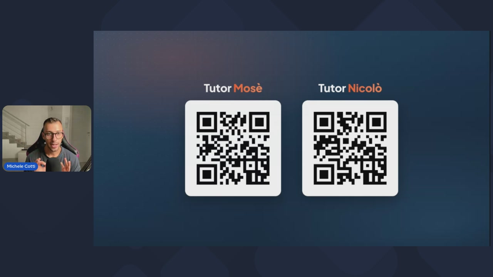
OCR: Tutor Mosè Tutor Nicolò
E questo uscirete da lì sapendolo fare, ok? Come ripeto, anche quel corso sono 15 ore di corso pratico, dritto al punto. Se qualcuno segue i miei video YouTube, ok, sa come spiego le cose, ok? Sa come spiego le cose, vado dritto al punto, in modo chiaro, non lascio nulla per scontato, ok? Perché per me quello è la cosa che vale più di tutte, ok? Quindi questa è l'unica opzione, ok? Oggi non c'è da lasciare un acconto, l'abbiamo fatto ieri sera per assicurarvi il posto, va benissimo. Adesso l'unica soluzione è scrivere al vostro tutor, ed è la cosa più semplice che potete fare, anche solo per farvi una chiacchierata informativa, ok? Scrivete al vostro tutor, scrivete al vostro tutor. Ora vedo magari di rimettervi qua tutta la parte completa, così vediamo un attimo. Vi rimetto magari tutta la slide, poi apriamo la chat così andiamo a sviscerare magari se avete qualche domandina, ok? Diamo un secondo, perfetto, facciamo una cosa, allora, prendiamo, prendiamo, allora, allora, allora, ci siamo, eh?
OCR: Tutor Mosè Tutor Nicolò
Un secondino che almeno vi piazzo qua il tutto. Allora, intanto, anzi, nel frattempo vi lascio che vedo che state già scrivendo le domande,
OCR: pra Michele Cotti
intanto vi lascio questo così se volete scrivere al tutor, però nel frattempo vedo di caricarvi, così avete poi anche tutto il bel recap diretto. Ok, niente, non mi lascia caricare, facciamo un secondo che vediamo se riesco a mettervela in questo modo, ma senza nessun problema.
Niente, vi lascio i QR, vediamo se facciamo l'ultimo test, poi rispondo alle vostre domande, eh, ragazzi? Però almeno vi facevo tutto, vi lasciavo i due QR con il recap, ma niente, tanto il recap l'avete visto, credo che ormai abbiate capito cosa c'è dentro, quindi lasciamo così che va benissimo, ok?
OCR: Michele Cotti
Lasciamo così che va più che bene, a meno che, fatemi vedere se, tac, tac, tac, anzi, perfetto, abbiamo trovato la soluzione. Allora, condividi schermo, ok, eccoci qua, ce l'abbiamo fatta, così avete tutto il recap di quello che trovate dentro, l'offerta, che davvero, ragazzi, il valore, il valore che, no, bravi, il microfono.
Ok, ci ristiamo, il valore che c'è all'interno è davvero di 15.000 Euro, ok? Non è una cosa inventata, ok? È quello che a mercato vale tutta la roba che c'è dentro, ok? E ve li ho spiegati i motivi del perché, invece ve lo stiamo dando a 4.700 Euro, ok? Avete comunque i QR e potete tranquillamente inquadrarli. Ok, vediamo un attimo, un po'. Allora, da social media manager... Da social media manager produco tanti contenuti a settimana, post, mail, script, come può intervenire e automatizzare il company brain dall'idea al piano editoriale fino alla pubblicazione ed anche al controllo degli insights? Assolutamente sì, quella roba qua la fa tutta, ok? La fa tutta, perché gli script dal momento che...
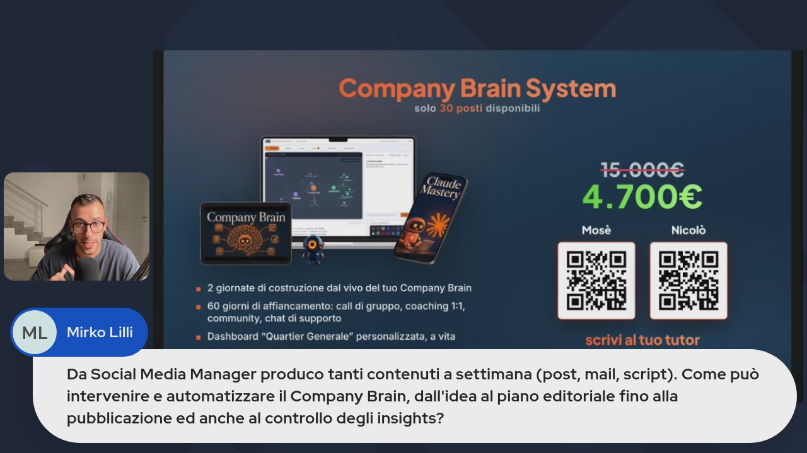
OCR: solo ti disponibili Claude Masters 2 giornate di costruzione dal vivo del tuo Company Brain 60 giorni di affiancamento: call di gruppo, coaching 1:1, ‘community, chat di supporto Dashboard “Quartier Generale” personalizzata, a vita Da Social Media Manager produco tanti contenuti a settimana (post, mail, script). Come può intervenire e automatizzare il Company Brain, dall'idea al piano editoriale fino alla pubblicazione ed anche al controllo degli insights?
Se tu produci contenuti, allora hai un tono di voce sicuramente di come scrivi e hai già tanti esempi di quello che hai fatto. Quindi post, mail, script, quelli te li fa, ok? Quelli te li fa di base. Poi, cosa si può automatizzare? Dall'idea del piano editoriale, chiaramente, anche qua, e sì, anche dalla pubblicazione al controllo degli insights. Non abbiamo un connettore diretto a meta, a Instagram. A meta c'è per le ads, ti parlo in gergo tecnico, tanto se sei social media manager lo sai, ma connettore Instagram diretto per ora non ce n'è ancora, ma ci sono piattaforme come Bloteto, come Buffer, te ne cito alcune, che ci colleghiamo al nostro account Instagram, abbiamo l'MCP, abbiamo il collegamento diretto di quelle piattaforme, e di conseguenza noi direttamente dal nostro company brain possiamo postare il contenuto e avere anche tutti gli insights, assolutamente. Mentre per quanto riguarda, invece, YouTube, molto più semplice, quello ci sono le API dirette e si prende giù tutto. Però quello è proprio uno dei casi migliori in assoluto.
OCR: solo ti disponibili Claude Masters 2 giornate di costruzione dal vivo del tuo Company Brain 60 giorni di affiancamento: call di gruppo, coaching 1:1, ‘community, chat di supporto Dashboard “Quartier Generale” personalizzata, a vita Da Social Media Manager produco tanti contenuti a settimana (post, mail, script). Come può intervenire e automatizzare il Company Brain, dall'idea al piano editoriale fino alla pubblicazione ed anche al controllo degli insights?
Cioè dal momento che tu hai il tuo company brain, quella roba qua la puoi tranquillamente automatizzare tutto. Noi in azienda, la maggior parte di quelle cose qua le abbiamo automatizzate, ok? Allora, vediamo un po' anche qua. Se ad esempio devo organizzare cantieri, sapere chi ha richiesto ferie, ferie accettate, ferie rifiutate. Facciamo una cosa intanto che vi metto un pochettino più su questo, così non vi disturba, e potete tranquillamente scrivere al tutor e via, così i commenti non lo disturbano. Perfetto, dovrei muoverlo così, ottimo. Stavamo dicendo, ferie, ferie accettate, ferie rifiutate, gestione, spostamenti, automezzi, tipologie di attività in funzione dell'abilità del dipendente, abilitazione, sicurezza, tutto deve essere orchestrato con dati sensibili, con i piedi di piombo. Tutto è fattibile, ma sinceramente di Cloud e Oracle, USA, non mi fido. Vorrei soluzioni italiane e europee. È chiaro, qui dipende molto chiaramente da ciò che vuoi e assolutamente va fatto con i piedi di piombo.
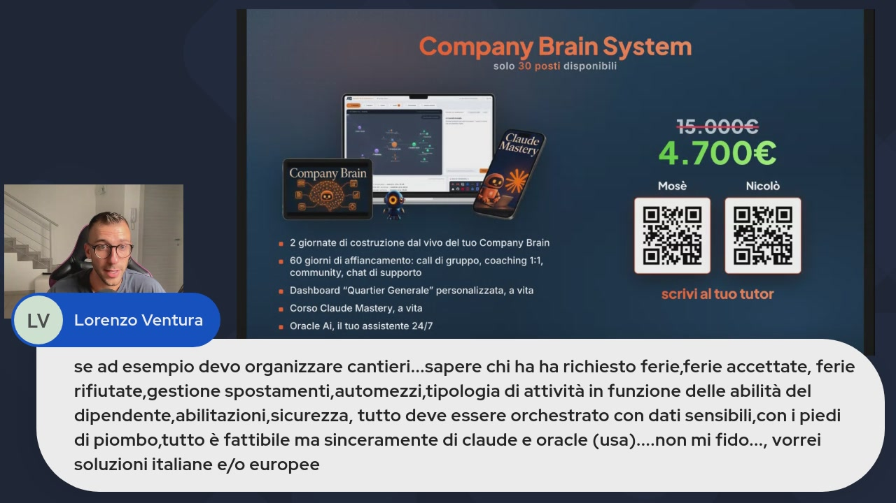
OCR: solo disponibili Claude Master Company Brain 2 giornate di costruzione dal vivo del tuo Company Brain 60 giorni di affiancamento: call di gruppo, coaching 1:1, community, chat di supporto Dashboard “Quartier Generale” personalizzata, a vita Corso Claude Mastery, a vita Oracle Ai, il tuo assistente 24/7 se ad esempio devo organizzare cantieri...sapere chi ha ha richiesto ferie,ferie accettate, ferie tate,gestione spostamenti,automezzi,tipologia di attività in funzione delle abilità del dipendente, abilitazioni,sicurezza, tutto deve essere orchestrato con dati sensibili,con i piedi di piombo,tutto è fattibile ma sinceramente di claude e oracle (usa)....non mi fido..., vorrei soluzioni italiane e/o europee
Chiaramente anche Cloud, come ti dicevo, nel piano team hai la parte di privacy e sei coperto. Poi chiaramente si possono adottare soluzioni diverse dove girano su server europei. Oppure potresti fartelo anche in locale, ma ti servirebbe una macchina veramente molto forte per far girare il modello. Il fatto è che ad oggi non ci sono AI italiani o AI europei così fantastici. Però anche tutta quella roba che hai detto è super super fattibile, assolutamente. L'amo per far girare tutto in locale quindi non ha senso, oltre ad essere una soluzione molto costosa. Sì, l'amo per far girare tutto in locale lo potresti fare, però è un modello comunque pesante. Cioè se non hai qualcosa dove almeno hai 32 giga di RAM, non ti gira, ok? Non ti gira bene e ovviamente non ha la capacità di pensiero che può avere un Opus, un Fable 5, un Sonnet, ok?
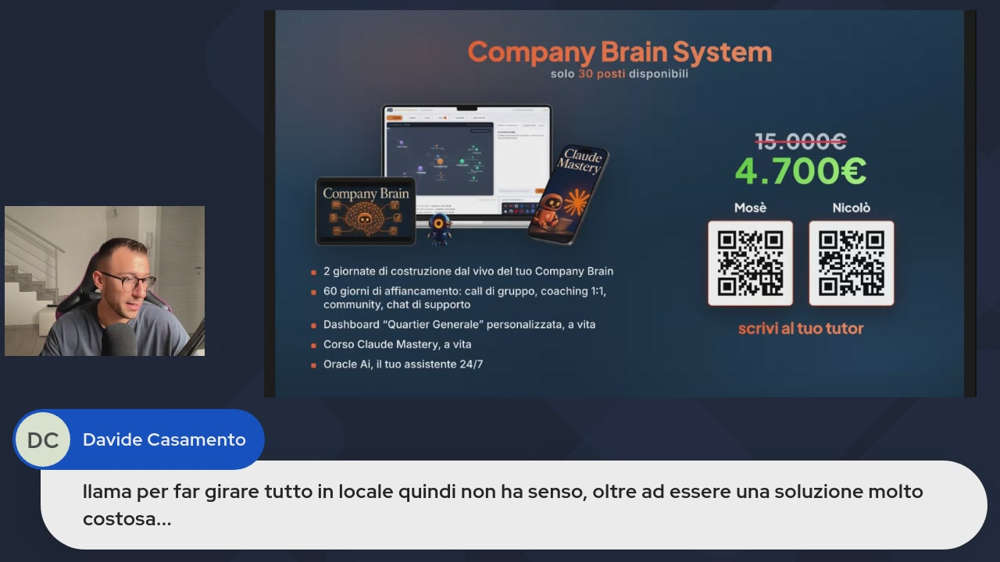
OCR: Company Brain System solo 30 posti disponibili Laude Mastery Company Brain sa 2 giornate di costruzione dal vivo del tuo Company Brain 60 giorni di affiancamento: call di gruppo, coaching 1:1, community, chat di supporto Dashboard “Quartier Generale” personalizzata, a vita scrivi al tuo tutor Corso Claude Mastery, a vita Oracle Ai, il tuo assistente 24/7 Ilama per far girare tutto in locale quindi non ha senso, oltre ad essere una soluzione molto costosa.
Sì, ne usciranno di modelli migliori anche tipo l'amo, ok? Ma capiamoci, cioè ci sono diverse soluzioni, dipende sempre da quello che tu vuoi ottenere, ok? Se io sviluppo applicazioni che usano i pazienti per visionare esercizi e similari, sono equiparabili ai vari fornitori di servizi, cosa intendi? Cioè pazienti di che tipo? In realtà qui ci sono, se tu crei un'applicazione che poi mandi alle persone, non sei equiparabile a tipo Antropic, dipende che modelli ci girano sopra, quindi di conseguenza avrai chiaramente delle regoline in più. Però non sei un Antropic, ok? Grazie che mi avete annunciato per il microfono. Perché non propone una borsa di studio? Perché noi lavoriamo, ok? Lavoriamo con sta roba, quindi perché dovrei regalare una borsa di studio?
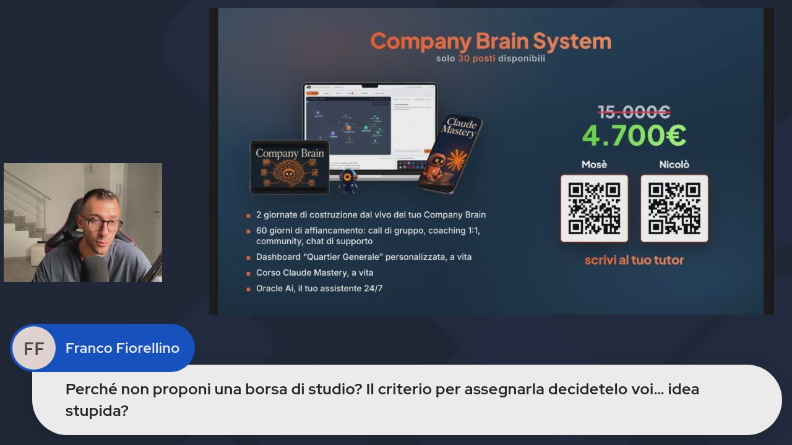
OCR: Company Brain System solo 30 posti disponibili Uaude Mastery Company Brain sE a 2 giornate di costruzione dal vivo del tuo Company Brain 60 giorni di affiancamento: call di gruppo, coaching 1:1, community, chat di supporto Dashboard “Quartier Generale” personalizzata, a vita scrivi al tuo tutor Corso Claude Mastery, a vita Oracle Ai, il tuo assistente 24/7 Perché non proponi una borsa di studio? Il criterio per assegnarla decidetelo voi... idea stupida?
Spiegami il motivo di questo, ok? Non so cosa tu faccia Franco, però se uno arriva da te, magari stai vendendo servizi, e ti dice, ma perché noi non facciamo una borsa di studio e scegliamone uno e gli regaliamo una roba? Ok, non è che stiamo parlando di una roba da 100 euro, ok? Se volete la soluzione da 100 euro, del corsettino da 100 euro, c'è chi vende. E' una soluzione diversa da quella che offriamo noi, ok? Quello che hai con noi è un percorso in cui sei seguito, un percorso dove ci sono io, c'hai un coach che ti segue, abbiamo due giornate intere in live, hai un affiancamento per 60 giorni, hai un corso intero, hai un botto di roba, ok? Poi te li trovi, ci sono le communitine su school da 100 euro. Va bene, se volete quella soluzione andate lì, va benissimo, ok? Noi non lavoriamo con queste persone, ok? Ma che potenza deve avere il cervello per far girare il cervello? Dipende, nel senso, cosa intendi, nel senso, io per dirti, cioè, con un computer già
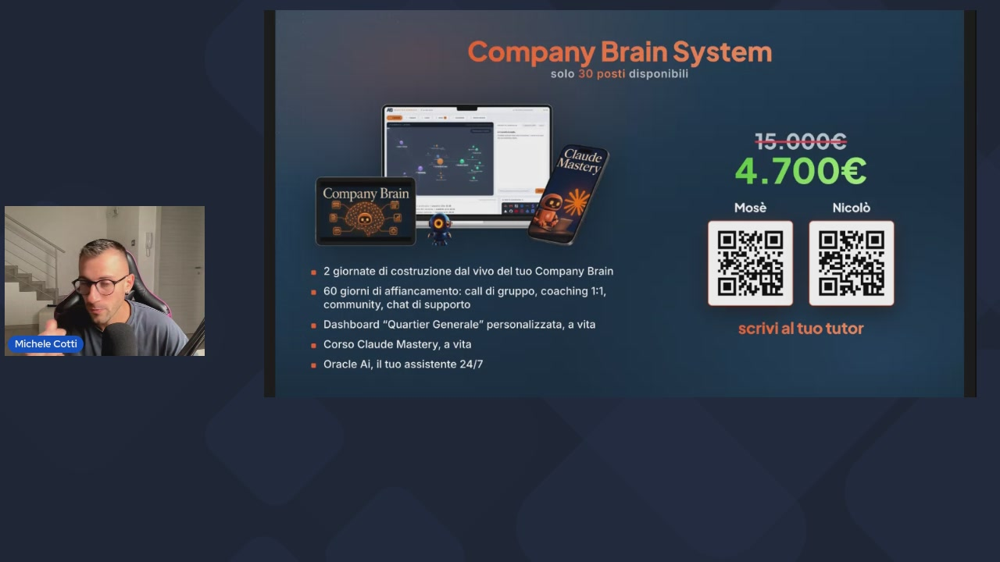
OCR: Company Brain System solo 30 posti disponibili Company Brain ti E) ® 2 giornate di costruzione dal vivo del tuo Company Brain ® 60 giorni di affiancamento: call di gruppo, coaching 1:1, ‘community, chat di supporto ®» Dashboard “Quartier Generale" personalizzata, a vita scrivi al tuo tutor » Corso Claude Mastery, a vita ® Oracle Ai, il tuo assistente 24/7
buono funziona bene, ok? Dipende sempre chiaramente da quanto grande è il cervello, cosa gli devi far fare e dipende cosa intendi per potenza, ok? Allora, in una delle state precedenti, quando eravate in live con Cristiana e Irina, avete parlato di collegare il loro company brain, il my second brain dei singoli, potresti spiegare brevemente cosa significa e come farlo? PS, grazie per questa esperienza diretta, erano molto interessanti da ascoltare. Grazie a te Daniele, ma in realtà loro cosa hanno fatto? L'abbiamo creato un company brain aziendale e poi chiaramente il company brain aziendale lo gestisce Irina, ok? Lo gestisce Irina, quindi è lei che si occupa di immettere nuova roba nel company brain, ma ognuno, loro hanno un server aziendale, ok? Quindi tutto gira sul loro server aziendale, ognuno dei dipendenti, lei è andata a fare una copia del company brain dove all'interno ci sono delle regole che loro non possono scrivere all'interno, ma possono solo pescare i dati, dove ognuno ha una propria parte su
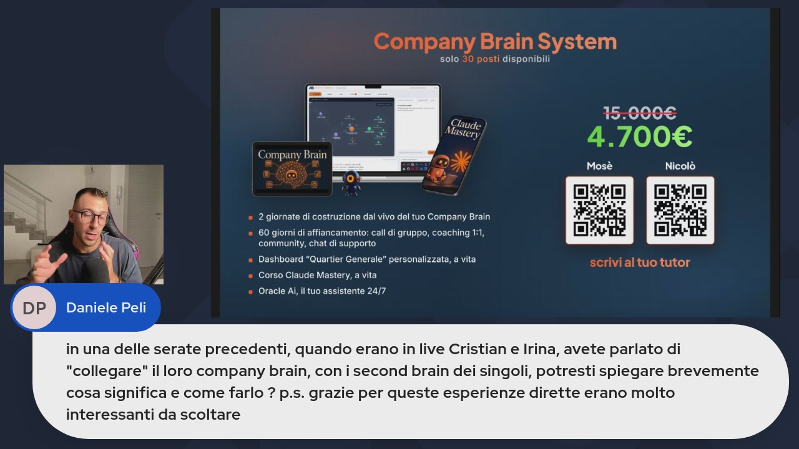
OCR: solo disponibili Claude Master Company Brain 2 giornate di costruzione dal vivo del tuo Company Brain 60 giorni di affiancamento: call di gruppo, coaching 1:1, community, chat di supporto a Dashboard “Quartier Generale” personalizzata, a vita Corso Claude Mastery, a vita Oracle Ai, il tuo assistente 24/7 in una delle serate precedenti, quando erano in live Cristian e Irina, avete parlato di "collegare" il loro company brain, con i second brain dei singoli, potresti spiegare brevemente cosa significa e come farlo ? p.s. grazie per queste esperienze dirette erano molto interessanti da scoltare
cui invece può lavorare, quindi le persone possono aggiungere, ma vanno in una cartella dove poi a fine giornata Irina ha all'interno, c'è la parte di dreaming che spiegavamo poi anche ieri, in realtà, che è un'ingestione automatica in cui gli prende, gli guarda tutte quelle che le persone hanno inserito, se hanno modificato qualche file, non hanno modificato il principale, ma hanno creato, si è creata una copia di quello originale modificata e lei decide se farlo diventare la nuova originale nel brain oppure no. Se un dipendente ha creato un'automazione nuova, una skill nuova che lei vuole integrare nel brain, sarà lei a decidere, ok bene, la rendo disponibile a tutti e allora a tutti poi si aggiorna il company brain, quindi di conseguenza non è altro che il company brain creato, ok, e poi distribuito per i dipendenti con una copia, con dei permessi, ok, e lo si fa tranquillamente da una, da un'applicazione, ok, semplicemente che andremo ad utilizzare, è un plugin che si attacca e che può anche gestire i permessi, quindi
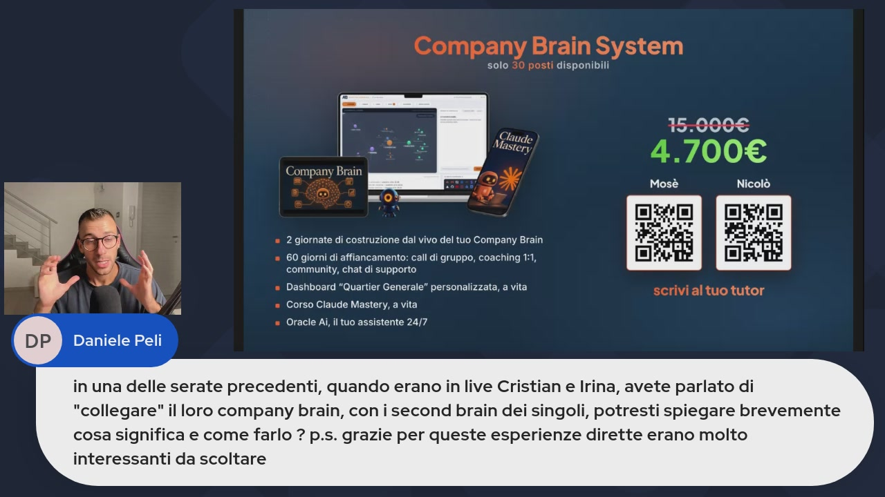
OCR: solo disponibili Claude Mastest Company Brain 2 giornate di costruzione dal vivo del tuo Company Brain 60 giorni di affiancamento: call di gruppo, coaching 1:1, community, chat di supporto Dashboard “Quartier Generale” personalizzata, a vita Corso Claude Mastery, a vita Oracle Ai, il tuo assistente 24/7 in una delle serate precedenti, quando erano in live Cristian e Irina, avete parlato di "collegare" il loro company brain, con i second brain dei singoli, potresti spiegare brevemente cosa significa e come farlo ? p.s. grazie per queste esperienze dirette erano molto interessanti da scoltare
di chi vede cosa, chi scrive e quant'altro, ovviamente che qua sempre dipende da cosa stai cercando, però poi ognuno ha il proprio company brain, quindi di base al company brain dell'azienda cui può chiedere, fare e quant'altro, ma non possono modificarlo, ok, ma non possono modificarlo perché almeno è solo Irina che gestisce la modifica del company anche basato su quello che le altre persone gli mettono, quindi uno inserisce una cosa nuova, vuole modificare un documento, si crea la copia, lui lo modifica nel suo, a posto, non viene riflesso su tutti finché Irina non lo riflette, ok, spero di averti risposto, però assolutamente cosa che secondo me è molto molto bella, fatta poi su server aziendale, top. Allora, abbiamo 5 tere di dati ben organizzati su cartelle Dropbox, collegate e taggate la gestionale Podio Progress. Allora, Podio Progress in realtà non lo conosco, non ha
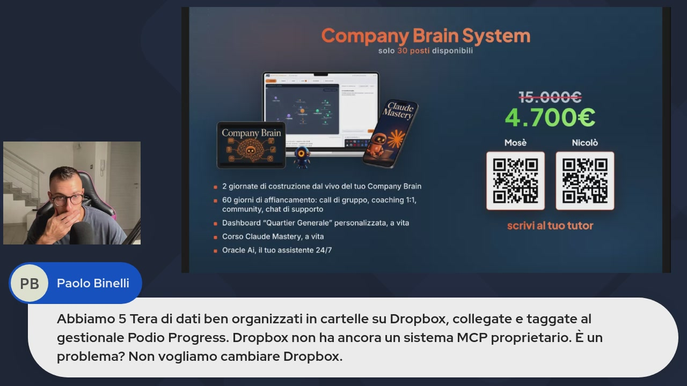
OCR: solo ti disponibili Taude Masters Company Brain 2 giornate di costruzione dal vivo del tuo Company Brain 60 giorni di affiancamento: call di gruppo, coaching 1:1, community, chat di supporto Dashboard “Quartier Generale” personalizzata, a vita Corso Claude Mastery, a vita Oracle Ai, il tuo assistente 24/7 Abbiamo 5 Tera di dati ben organizzati in cartelle su Dropbox, collegate e taggate al gestionale Podio Progress. Dropbox non ha ancora un sistema MCP proprietario. È un problema? Non vogliamo cambiare Dropbox.
ancora un MCP proprietario, è un problema, non vogliamo cambiare Dropbox. Allora, dipende, nel senso, Dropbox in realtà io, se tu mi dici che non ha un MCP proprietario, mi fido, ma lo si può creare se Dropbox poi ha l'API, perché se un sistema ha l'API per comunicare con altro, noi possiamo andare a costruirci sopra un MCP personalizzato, quindi anche tipo con Irina e Christian, loro avevano un gestionale che non aveva API, ma abbiamo trovato un metodo, o meglio, che non aveva MCP, ma abbiamo trovato un metodo per, diciamo, riuscire comunque a collegarci e avere, creare noi il nostro MCP dedicato. Chiaramente poi 5 tere di dati ben organizzati, quello top. Chiaramente anche lì, magari il tuo gestionale, ad esempio, avrà un MCP, magari ci si può collegare al gestionale. Poi nel brain a volte non serve che ci sia tutto, serve a volte che sappia dove sono le cose, ok? Sappia dove sono le cose e quindi di conseguenza sa dove recuperarle, perché magari quei 5 tera di dati in realtà
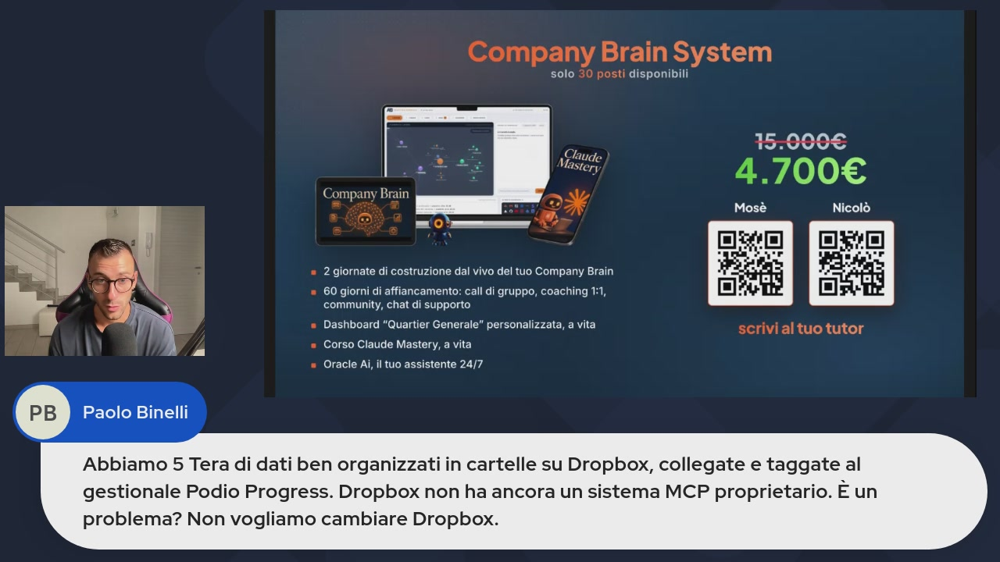
OCR: solo ti disponibili Aaude Masters Company Brain 2 giornate di costruzione dal vivo del tuo Company Brain 60 giorni di affiancamento: call di gruppo, coaching 1:1, community, chat di supporto Dashboard “Quartier Generale” personalizzata, a vita Corso Claude Mastery, a vita Oracle Ai, il tuo assistente 24/7 Paolo Binelli Abbiamo 5 Tera di dati ben organizzati in cartelle su Dropbox, collegate e taggate al gestionale Podio Progress. Dropbox non ha ancora un sistema MCP proprietario. È un problema? Non vogliamo cambiare Dropbox.
nel brain non servono nemmeno, ok? Però c'è una mappatura di tutto in modo tale che lui sa dove recuperarli, in modo tale da neanche appesantirlo troppo, insomma, ok? Ancora alcuni punti chiariremo bene così, grazie Andrea. Con Metafunziono l'ho fatto assolutamente, anche noi. Con Meta collegato puoi lanciare ads di base, puoi lanciare pubblicità, gestirle, prendere i dati, puoi fare di tutto. L'unica roba è che tipo Instagram non si collega in automatico e pubblichi. Devi passare ad un'altra applicazione, ma nessun problema. Allora, anche questa, bella domanda. Michele, come si mitigano i rischi di sostenibilità del company brain nel tempo? Bella domanda. Questa, allora, dipende sempre dalla grandezza, ok? Ma se strutturato bene, chiaramente, lavora bene, ok? Perché, come ripeto, non ci va, ci va dentro l'azienda, ma è sempre capire cosa ci va, cosa rimane fuori ed è mappato e lui può recuperarlo,
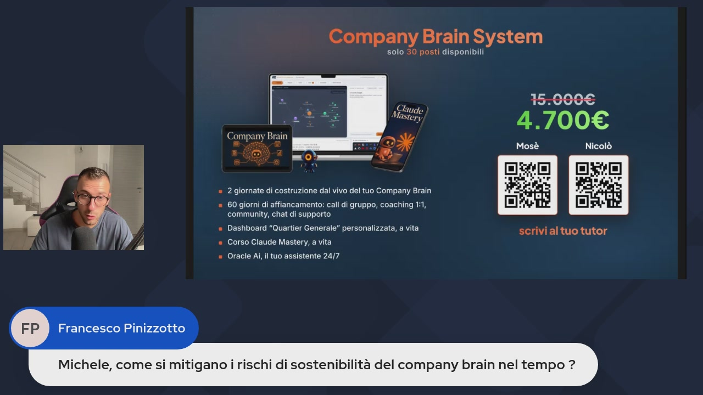
OCR: Company Brain System solo 30 posti disponibi Claude Mastesi 2 giornate di costruzione dal vivo del tuo Company Brain 60 giorni di affiancamento: call di gruppo, coaching 1:1, community, chat di supporto Dashboard “Quartier Generale” personalizzata, a vita scrivi al tuo tutor Corso Claude Mastery, a vita Oracle Ai, il tuo assistente 24/7 Michele, come si mitigano i rischi di sostenibilità del company brain nel tempo ?
che sono due cose diverse, ok? E chiaramente abbiamo delle funzioni, sempre tipo la parte di Dreaming che ti parlavo ieri, dove si va a far pulizia delle cose che non servono, si vanno a sistemare, il brain rimane sempre bello pulito. Quando poi diventa tanto tanto grande si possono anche agganciare cose, soluzioni separate, quindi anche lato proprio, come dire, hai un botto di documenti, no? Che tu devi riprendere delle informazioni, si potrebbe collegare ad un sistema RAG, quindi di conseguenza andiamo ad alleggerire il brain e lo mettiamo su un altro sistema. Ci sono, cioè, ci sono svariati sistemi, ok? Tutte cose che comunque nel caso poi si vanno a trattare ad hoc, ok? La prima cosa è far partire il brain, io non penserei già a quando il brain sarà così grande che magari, cioè, gira troppo, ma se è ben organizzato, ok? Lui funziona molto bene. Chiaramente sulla base della grandezza poi si trova la soluzione ideale, o si agganciano
OCR: Company Brain System solo 30 posti disponibi Claude Mastes 2 giornate di costruzione dal vivo del tuo Company Brain 60 giorni di affiancamento: call di gruppo, coaching 1:1, community, chat di supporto Dashboard “Quartier Generale” personalizzata, a vita scrivi al tuo tutor Corso Claude Mastery, a vita Oracle Ai, il tuo assistente 24/7 Michele, come si mitigano i rischi di sostenibilità del company brain nel tempo ?
cose nuove, eccetera, ok? Dipende sempre poi da quello che si va a fare. Ah, sì, ragazzi, mi sono dimenticato il regalo. In realtà c'è il regalo, ve lo consegniamo direttamente qua in chat, che è il prompt sull'obiettivo, ok? Quindi quello che vi ho dato la bussola che vi andrà a scremare. Bravi che me l'avete ricordato, altrimenti non me ne ricordavo più. Con i regali delle varie serate è possibile autonomamente costruire un company brain, anche se magari piccolino. Puoi avere una piccola parte, ok? Puoi iniziare, hai il tuo parte di contesto, è quello che vi dicevo, nel senso, con le informazioni che vi ho dato, le potete fare, nel senso, però è diverso farsi seguire da qualcuno che l'ha già fatto su aziende, sa dove mettere le mani, se vi bloccate avete il coach che vi supporta, cioè potete fare davvero, è un vantaggio enorme, ok? Perché spesso si pensa, no, ma me lo faccio da solo. Sì, ma quanto è il tempo che magari butti via a farlo da solo, o che sbagli, fai l'errore, ti blocchi, poi ti vedi il video YouTube diverso, poi dici, eh no, ma questo lo fa così, rimane
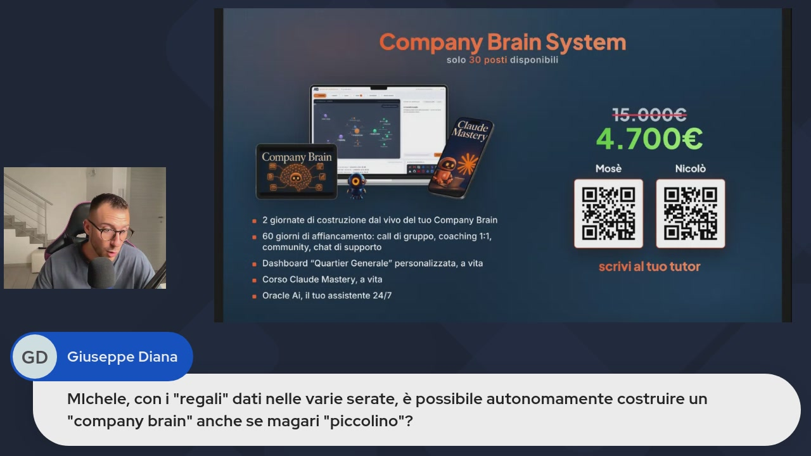
OCR: Company Brain System solo 30 posti disponibi Claude Mastede Company Brain 8-ESÀ -a 2 giornate di costruzione dal vivo del tuo Company Brain 60 giorni di affiancamento: call di gruppo, coaching 1:1, community, chat di supporto Dashboard “Quartier Generale” personalizzata, a vita scrivi altuo tutor Corso Claude Mastery, a vita Oracle Ai, il tuo assistente 24/7 Michele, con i "regali" dati nelle varie serate, è possibile autonomamente costruire un "company brain" anche se magari "piccolino"?
arenato, invece di avere una guida che ti dice esattamente cosa fare. Questo fa tutte le differenze del mondo. Poi, se vuoi provarci, provaci, assolutamente, ci mancherebbe. Allora, vediamo un attimo anche questa. Devo implementare i file di esempio per migliorargli la scrittura, visto che molte cose sono state fatte prima del Vault e del Workspace. A quel punto l'automazione richiederebbe meno controllo e sarei più tranquillo di farla pubblicare da solo. Esatto, esatto. Chiaramente, prima dell'autopubblicazione ci sta una fase di testing, ok? Sempre su tutto, ok? Fase di testing. Si fa l'automazione, bene, e com'è la generazione del preventivo? Ok, facciamo generare un preventivo, va bene, top confermato glielo inviamo. Secondo preventivo, terzo, quarto, quinto, bene. Arriverà al punto in cui non dovremmo più nemmeno guardare il preventivo, ma prima chiaramente ce lo facciamo fare l'umano all'interno del ciclo. Comunque rimane, ma rimane sulla parte decisionale, non è più lì a scrivere tutto a mano, ok? Quindi questa secondo me è la potenza assoluta del brain,
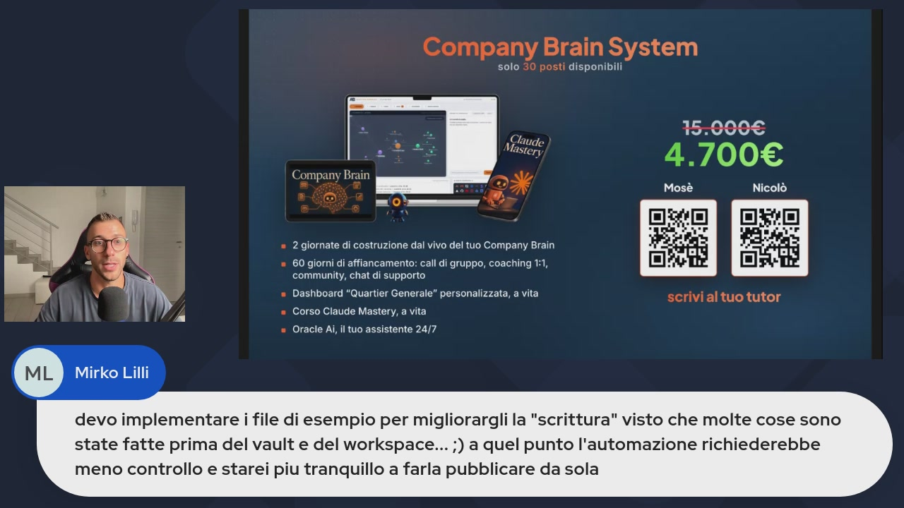
OCR: solo ti disponibili Taude Masters Company Brain 2 giornate di costruzione dal vivo del tuo Company Brain 60 giorni di affiancamento: call di gruppo, coaching 1:1, community, chat di supporto Dashboard “Quartier Generale” personalizzata, a vita Corso Claude Mastery, a vita Oracle Ai, il tuo assistente 24/7 devo implementare i file di esempio per migliorargli la "scrittura" visto che molte cose sono state fatte prima del vault e del workspace... ;) a quel punto l'automazione richiederebbe meno controllo e starei piu tranquillo a farla pubblicare da sola
ok? La potenza assoluta del brain. Ma il piano di abbonamento Cloud Pro alla privacy? No, allora, come ripeto, i piani da consumer, ok? In realtà no. Poi c'è un flag che tu togli per far sì che loro non addestrino i modelli con i tuoi dati, e lo puoi fare se tu vai nelle impostazioni di Cloud. Lato privacy, c'è proprio una parte, lo puoi vedere subito, vuoi che i tuoi dati siano utilizzati per addestrare i modelli, addeselezioni e no. Però chiaramente la parte team, ok, che ha un minimo di due posti, mi pare, sono minimo due posti di riprendere e parte da 20 euro al mese anche quello, hai già, hai più, più cose, insomma, ok? Hai molte più cose lato privacy e quant'altro. Ottimo, grazie, bene. Come faccio il backup dei dati e come faccio ad essere sicuro che, ad esempio, non mi cancella dell'email? Questo viene gestito con delle regole, ok? Come faccio il backup dei dati e come faccio ad essere sicuro che, ad esempio, non mi cancella dell'email? Questo lo si fa su, chiaramente, dei permessi. Cioè, calcola che, ad esempio, tipo anch'io, io ho
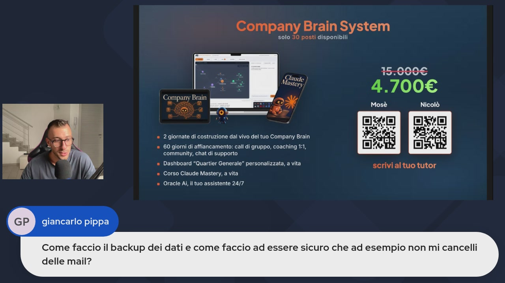
OCR: Company Brain System solo 30 posti disponibili Claude Mastege Company Brain I = ‘——©—=€=="<0 sfoga 2 giornate di costruzione dal vivo del tuo Company Brain 60 giorni di affiancamento: call di gruppo, coaching 1:1, community, chat di supporto Dashboard “Quartier Generale” personalizzata, a vita scrivi altuo tutor Corso Claude Mastery, a vita Oracle Ai, il tuo assistente 24/7 Come faccio il backup dei dati e come faccio ad essere sicuro che ad esempio non mi cancelli delle mail?
il permesso di eliminare l'email, a parte il mio click automatico, ma sennò io non glielo ho dato perché quando tu colleghi gli strumenti tu puoi dirgli che permessi vuoi dargli sulla lettura, sulla scrittura o all'interno di ogni permesso c'è cosa può fare. Quindi, ad esempio, tu dici voglio che lui sia in grado di leggere, bene, gli diamo i permessi di lettura. Voglio che sia in grado di scriverle, gli diamo i permessi di scrittura, con la possibilità di scrivere, ma la parte di eliminazione io lo blocchiamo, quindi lui non può eliminare. Cioè, da lì non esce, ok? Da lì non esce, quindi, assolutamente. Cioè, se tu non vuoi che non… Però chiaro che non te lo fa nemmeno se tu glielo chiedi, perché, chiaramente, perché è proprio la regola dell'MCP che gli toglie il permesso di farlo. Poi, se tu invece glielo vuoi mettere a livello più diverso, cioè abilitare quella funzione, ma mai nelle regole che lui non lo può fare, chiaramente non te lo farà, però non è che non ha il permesso e quindi non può farlo. È come dare le regole ad un dipendente. Non puoi aprire il cassetto, potrebbe essere che al giorno
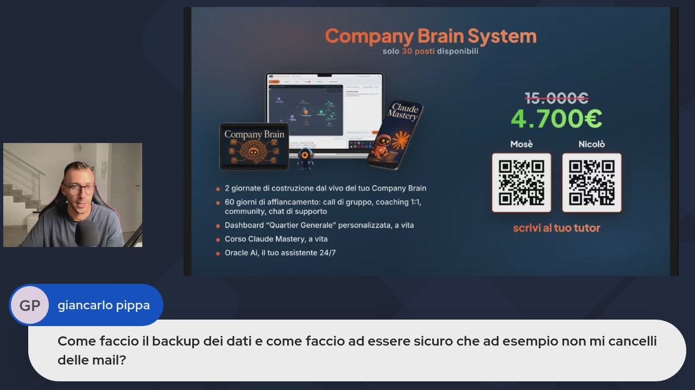
OCR: Company Brain System solo 30 posti disponibi Claude Masteg Company Brain sia 2 giornate di costruzione dal vivo del tuo Company Brain 60 giorni di affiancamento: call di gruppo, coaching 1:1, community, chat di supporto Dashboard “Quartier Generale" personalizzata, a vita scrivial tuo tutor Corso Claude Mastery, a vita Oracle Ai, il tuo assistente 24/7 Come faccio il backup dei dati e come faccio ad essere sicuro che ad esempio non mi cancelli delle mail?
lui te lo apre, ma se invece lui non ha la chiave del cassetto non lo può fare, ok? A prescindere che tu ci sia, non ci sia, un giorno si sveglia male, ok? Quindi quello si gestisce tutto a permessi, assolutamente. Assolutamente, questa è la cosa più bella. Se domani esce un LM versione 1000, assolutamente. Infatti è proprio quello del brain, perché il brain non è altro che poi tutta una parte di cartelle, documenti, file, punto MD, collegamenti esterni e poi ci gira dentro un modello. Tu, se vuoi cambiare modello, gli cambi il modello, ok? Cambi il modello e si avvolla. Tutto quello che hai fatto rimane lì. Esce il modello più potente, ci attacchi il modello più potente, ok? Questo è il bello del company brain, questo è il bello del company brain. Sì, hai ragione, hai ragione, ve lo inviamo, guarda che l'ha appena inviato Gaia sotto, è il prompt e la bussola, ok? Che è un assistente che trasforma, te l'ha scritto direttamente lei, il tuo obiettivo in un piano d'azione dettagliato, ti fa le domande giuste, ti consegna i task concreti per raggiungerlo, dividendo quello che fa le IAI da quello che tocca a te, ok? Assolutamente.
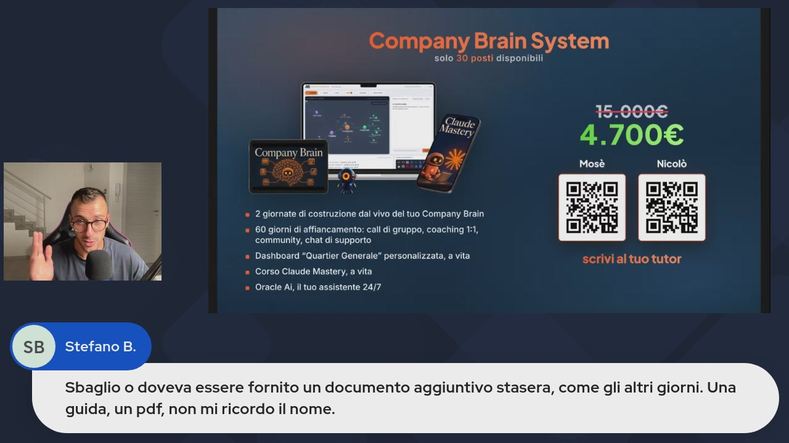
OCR: Company Brain System solo 30 posti disponibili laude Mastery e-ÉO 2 giornate di costruzione dal vivo del tuo Company Brain 60 giorni di affiancamento: call di gruppo, coaching 1:1, community, chat di supporto Dashboard “Quartier Generale” personalizzata, a vita scrivi al tuo tutor Corso Claude Mastery, a vita Oracle Ai, il tuo assistente 24/7 Sbaglio o doveva essere fornito un documento aggiuntivo stasera, come gli altri giorni. Una guida, un pdf, non mi ricordo il nome.
Scusa Stefano, se non l'ho citato, ma me ne sono dimenticato. Ma Antonio, molto strano, nel senso, ma se tu intendi le ads, sì, ma il post di contenuto diretto da Instagram, no. Assolutamente, beh sì, ma perché la mia società, dato che l'avete chiesto in tanti, sì, perché io non vendo più in Italia, ho la società estera, ok? E in America, ma noi lavoriamo con clienti italiani, anche Christian che avete visto è un cliente con azienda italiana.